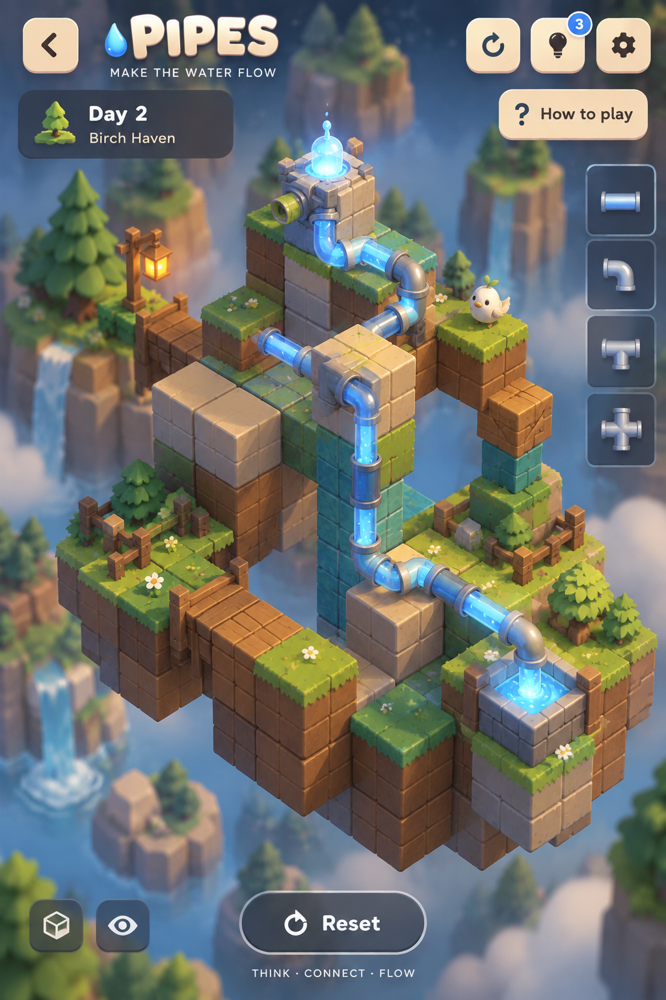
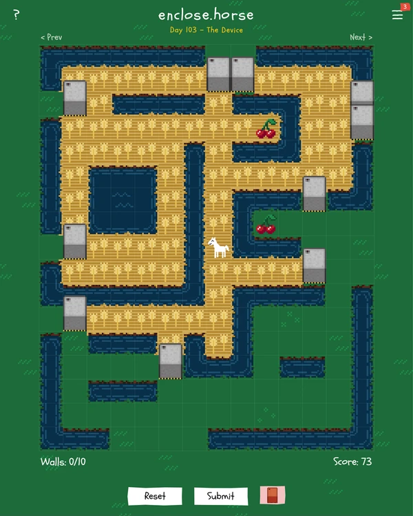
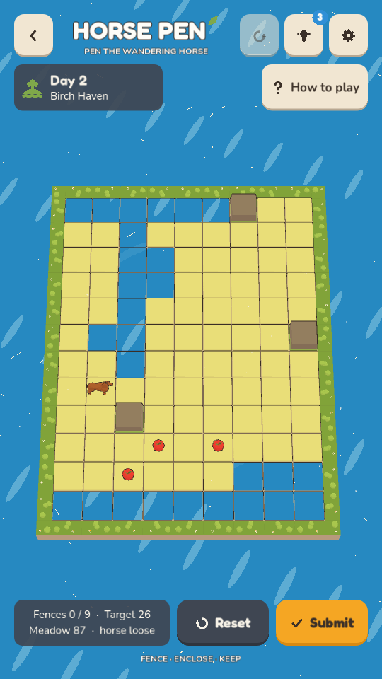
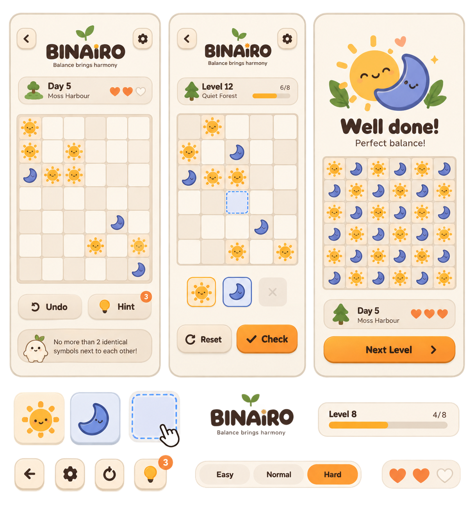
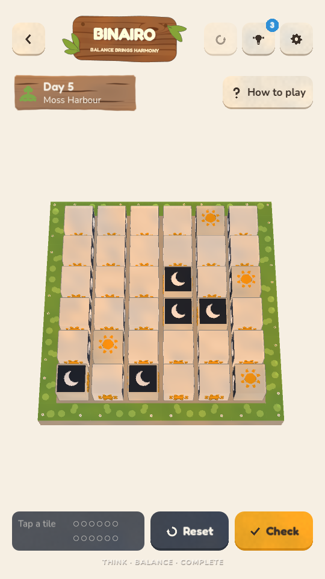
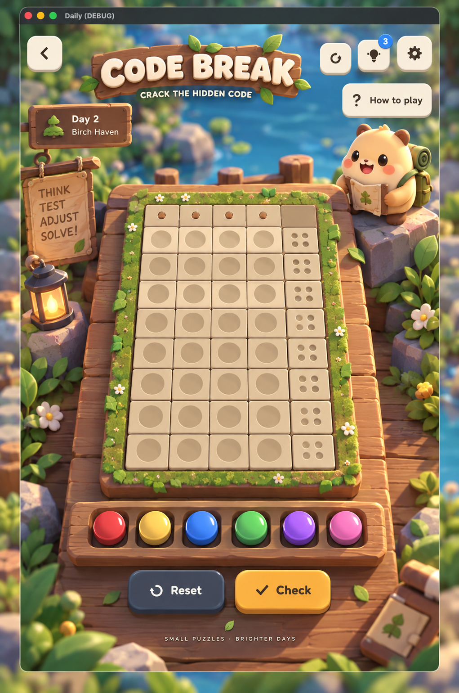
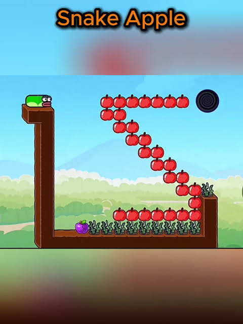

Pipes · make the water flow concept · 2026-09-15built · 2026-09-15
A floating voxel island seen from the corner. Water starts in a glowing tank on a high block and has to reach the pool at the drain. The player builds the pipeline from a tray of pieces, over ledges and down cliff faces. Water runs level and downhill on its own; every climb needs a pump. Tall ground hides part of the route, so you turn the island to see behind it.

docs/art/concept-pipes-iso.png.docs/superpowers/specs/, split into the sub-projects listed at the end.1. Rules decided
- Place, don't turn. The board starts with only the terrain, the source and the drain. The player places pieces from the tray; each kind has a count.
- Water cannot climb. From the source it runs through every connected mouth along the level and down any drop. It goes up a vertical run only when that run contains a pump.
- The player builds the vertical runs. Pieces can be placed in any open air cell, stacked down a cliff face, and take three-dimensional orientations. The game does not build risers on its own.
- Turning the island is part of the puzzle. Tall ground hides part of the route from any one side. The view cycles through four quarter turns.
2. Rules proposed
- Solved when water reaches every drain and no fed mouth leaks. Pieces left in the tray are fine. Dry, disconnected pieces are fine too; they just don't count.
- A leak is a fed mouth that faces nothing, faces the ground, or faces a piece with no mouth on that side. It pours. Leaks are a clue, not a failure.
- Standing. A piece must sit on the ground (its cell is directly above a block) unless it has an up or down mouth, in which case it may hang in a vertical run. So bridges through the sky are impossible; drops and climbs are not.
- One pump per climb. A vertical run is the maximal stack of pieces joined by up/down mouths. If any piece in it is a pump, water climbs the whole run. Two separate climbs need two pumps.
- The source's own height is not a limit beyond rule 2: water that has dropped into a valley cannot come back up without a pump, even to a level below the source.
3. Pieces
| Piece | Mouths | Orientations offered | Notes |
|---|---|---|---|
| Straight | two opposite | 3: along X, along Z, vertical | Vertical is the drop and the plain part of a climb. The chrome pipe model, laid on its side. |
| Elbow | two at right angles | 12 in space; when grown from a mouth, 4: turn left, right, up or down | Also the top and bottom of every drop: an elbow with a down mouth hangs over the edge, an elbow with an up mouth waits on the floor below. The chrome elbow, turned in space. |
| Tee | a through pair plus a branch | 12 in space; grown from a mouth, up to 6 | Needed only when a board has two drains. The chrome tee. |
| Pump | up and down | 1 | New model: a vertical straight with a brass housing and a lit collar. Only legal in a vertical run. Makes the run climb. |
| Cross | four in one plane | 3 planes | proposed: leave out With one source and no loops a cross never appears in a solution. Keep the model; add it back if loops or two sources ever come in. |
Fixtures (terrain, not pieces)
- Source tank. A stone cap on a high block with a glowing orb and one mouth, fixed by the generator. Always fed. Its jet runs from the entrance on.
- Drain pool. A stone rim with a basin, one mouth, on its own block. Dark until water arrives, then blue with ripples; the win chord plays when the last one fills.
- Ground. Grass-topped earth blocks, a cream stone top where a piece sits (the pad look), tinted in the pale given colour where a hint placed the piece.
4. Interaction proposed
Placing
- Tap a piece in the tray to select it. The selection stays after a placement so straights chain.
- Tap an open mouth (on the source, or on any placed piece) to place the selected piece in the cell that mouth faces, already turned to connect. This is the main gesture and the only way to reach a stacked cell: to build a drop, tap the down mouth of the elbow hanging over the edge, then the down mouth of the piece that appears, and so on.
- Tap a block top to place on that floor cell in a flat orientation, unconnected. For starting a stretch early or laying pieces near the drain and working back.
- Tap a placed piece to cycle its remaining valid orientations (straight 1, elbow 4, tee up to 6). Pieces a hint placed do not turn.
- Long-press a placed piece to send it back to the tray. Its downstream pieces stay where they are and go dry.
Looking
- Turn (the cube button, or a horizontal swipe on empty ground): a quarter turn, 0.35 s, eased. The camera re-fits the same box so the island stays the same size on screen.
- Peek (the eye button, hold): the ground fades to about 35% so the pipes behind it show. Pieces stay solid and tappable. Released, it fades back.
- Undo reverses place, turn and remove. Hint (3) places the next piece of the generator's route, from the source outward, locked and tinted as a given. Reset returns every piece to the tray and turns the view back to the first stop.
- No Check button: the water is the check.
Analytics
Existing board events carry on. Two new ones: view_turn (count per puzzle) and peek_used. Their counts tell us whether the third dimension is a puzzle or a nuisance.
5. Water, leaks and the win
Flow is a breadth-first search from the source's mouth over placed pieces. Two pieces connect when each has a mouth facing the other. A step is taken along the level or downward freely, and upward only when the vertical run the step belongs to holds a pump. Each fed piece remembers its depth so the wetting wave races outward from the source, blue water visible through every sight gap. A fed mouth that connects to nothing pours a jet, at most four at once, the ones nearest the source first. Every drain fed and no leak means solved: the drains ripple, the win chord, the share glyphs describe the terrain and the route length.
6. Generator
- Route first. Pick source and drain columns far apart. Walk a random self-avoiding route in three dimensions: horizontal steps on floor cells; a drop (elbow over the edge, k vertical straights, elbow on the floor below); a climb (elbow with an up mouth, k pieces one of which is a pump, elbow at the top). The difficulty says how many climbs and how long the route may be. A second drain, when there is one, grows a branch off the route through a tee.
- Terrain from the route. Every floor cell the route uses fixes its column's height. A column under a drop or a climb takes the height of the run's floor. Every other column gets a random height, smoothed toward its neighbours, never rising into a route cell. Then a few extra ledges are raised at random so the ground is interesting where the route is not.
- Occlusion check. From the first camera stop, at least one route cell must be hidden behind taller ground (medium and hard). Otherwise raise a column in front of the route or regenerate. This is what guarantees turning the view matters.
- Tray. Count the route's pieces per kind and add the difficulty's spares. The spares are decoys that make "use everything" impossible as a strategy.
- Verify. Run the game's own flow on the route: every drain fed, no leaks, every piece standing legally. Regenerate on failure. The win harness plays the route back through the same tap-a-mouth path the player uses.
| Easy | Medium | Hard | |
|---|---|---|---|
| Columns | 4 × 4 | 5 × 5 | 6 × 6 |
| Height levels | 3 | 4 | 5 |
| Drains | 1 | 1 | 2 |
| Climbs (pumps) | 0 or 1 | 1 | 1 or 2 |
| Route pieces | 5 to 8 | 8 to 12 | 12 to 18 |
| Spare pieces | 0 | 1 | 2 |
| Hidden route cells | 0 | ≥ 1 | ≥ 2 |
7. Camera and stage
- Orthographic proposed. Parallel edges are what makes the blocks read as a diorama. The camera fits the orthographic size to the board box so the island fills the same screen rect at every stop.
- Pitch about 35°, yaw 45° + k·90°. The camera rig takes the board's pitch and yaw and gains a tweened
turn(). Board box: columns × (max height + 1) × columns, so the tallest climb stays framed at every stop. - Ground as merged meshes, one per material (grass top, earth side, stone pad), rebuilt when a hint tints a pad. Up to 6 × 6 × 5 blocks would be 180 instances and twice that in draw calls; merged it is a handful. Outlines come from the toon shell.
- Picking. A tap ray is tested against block tops and against every mouth's small sphere; the nearest hit wins. Plane picking is not enough because cells sit at many heights.
- Peek swaps the ground materials for a transparent toon variant while held; nothing else changes.
8. Models and code
Models (Blender, through the contract)
block: a 1×1×1 earth cube with a grass top, two layers so the top can be tinted stone.
pump: vertical pipe with brass housing and a lit collar, plus the three pipe layers.
source_tank: stone cap, glowing glass orb, one mouth.
drain_pool: stone rim, basin, one mouth.
Straight, elbow and tee are the chrome pipe models, turned in space by the board.
Code
pipes_iso_gen.gd: route, terrain, tray, verify.
pipes_iso.gd: the board (build, pick, place, flow, animations).
A PieceTray in ui/hud: vertical, icon buttons with counts.
Camera rig: orthographic fit and tweened turn.
Puzzle id stays pipes, so progress and analytics carry on.
9. Open decisions need a yes or no
| Question | Recommendation | Alternative |
|---|---|---|
| Cross piece | Leave it out. With one source and no loops it never appears in a solution; a tray item you never need is noise. | Keep it as a decoy on hard boards. |
| Two drains on hard | Yes. It is the only thing that gives the tee a job and the branch adds a real planning step. | One drain everywhere, no tees in the tray. |
| Spare pieces | 0 / 1 / 2 by difficulty. Enough that counting the tray does not solve the board, few enough that the tray still tells you the route's rough length. | None: the tray is exactly the route (the classic "use every piece"). |
| Removing a piece | Long-press. It is what every builder game on a phone does, and it keeps tap free for turning. | Drag it off the island. |
| Orthographic camera | Yes, for this board only. The other boards keep the perspective rig. | Keep perspective at a narrow field of view; the concept has a whisper of it. |
| Standing rule (§3.7) | Horizontal pieces must rest on ground; only pieces with an up or down mouth may hang. | Any piece may hang off any placed piece (allows sky bridges). |
| Scenery | Deferred, as for every other board: no trees, lanterns, fences, waterfalls or bird in the first cut. The island silhouette and the water below are the scene. | Ship two or three scenery blocks (tree, lantern) with the board. |
| Name and id | Keep the id pipes and the title; the blurb becomes "Build the pipeline. Water won't climb without a pump." | A new id and a new menu card. |
10. Build order (sub-projects)
- Rules and generator. The 3D grid, piece and mouth model, standing rule, flow with pumps, route/terrain/tray generator, verifier. Headless; drives everything else. Primitive placeholders for the four models so the board runs before the art.
- Isometric stage and interaction. Orthographic fit and turn on the rig, merged ground, ray picking, tap-a-mouth placement, orientation cycling, long-press remove, the piece tray, peek, undo, hint, reset.
- Art and motion. The four models in Blender through the contract; water carried over; entrance (island rises, blocks pop in by height, tank lights, tray slides in); win (drains ripple, pumps whir, camera does one slow full turn).
- Scenery. Later, with the rest of the islands.
11. What was built 2026-09-15
Every open decision in §9 went the way of the recommendation: no cross in
the tray, two drains on hard through a tee, 0/1/2 spares, long-press to
remove, an orthographic camera for this board only, the standing rule as
written, scenery deferred, and the id and title kept. The three sub-projects
landed as one branch rather than three -- the rules, the island and the art
in five commits on feat/pipes-iso -- and the spec at
docs/superpowers/specs/2026-09-15-pipes-iso-design.md carries a
section of amendments recording where the build changed the design: the route
length is a target rather than a bound, the fixtures' reference mouth is S,
the ground is merged per level so the crowns arrive with their blocks, the
camera is framed by the terrain's real height, picking stops at the ground
(and peek lifts that, which is how a mouth in a hollow is reached), and the
piece tray sits in the action bar because the real HUD has a bottom bar this
mock does not.
Measured at 1080 × 1920: idle 3.0 ms, 144 draw calls -- an island of up to
180 blocks costs about thirty of them, merged. Suite 2052/0, and the win
harness plays the board to solved through the tray, ray picking, orientation
cycling, turning and peek at all three difficulties. The old pad board and
its spanning-tree generator are deleted; the pipes id, its
progress and its analytics carry on.
Sub-project 4, the scenery, is still deferred, with the rest of the islands.
Horse Pen · a meadow, not a board polish · 2026-09-15built · 2026-09-15
Today the board is a fenced plate floating on the sea. The polish makes it the meadow itself: grass to every edge of the screen, streams with banks cut through it, boulders, apples and the horse in the middle, and hay bales instead of rails to close the gaps. Rules, scoring, target, hints and submit stay exactly as they are. Everything on this page is look, motion and words.

docs/art/concept-horse-ref.png.
docs/art/concept-horse-before.png.1. What stays decided
- The rules and the score. Tap grass to build a barrier, tap it to take it down. The horse walks up, down, left and right, never through a barrier, a boulder or water. The pen is closed when it can no longer reach an edge cell. Every cell it can still reach scores one, an apple in the pen three more.
- The daily framing. A limited stock of barriers, and a target: the score of a pen the generator itself closed within that stock. Submit ends the day once the pen is closed and worth the target; until then you may keep rebuilding for a bigger pen. Beating the target is the point.
- Live reach. The meadow the horse can reach is always painted, so the pen is read off the board, never guessed.
- Undo, three hints, Reset, Submit. Hints lay barriers of the generator's own pen and pin them. Submit gives its three answers: gaps flash, too small, solved.
- The generator, the board sizes (8 × 10, 9 × 12, 10 × 13), the budgets (7, 9, 10), the puzzle id
horseand the analytics events.
2. The scene decided: fill the screen proposed: how
- No plate. The playable field is a patch of a meadow that runs past every edge of the screen. The camera still fits the field into the board slot, with
board_margin()at zero; the ring around it is scenery that fills behind the HUD and out to the corners. The stage's sea and sky stay where they are and are never in frame. - The ring. One ground plane, about 60 units on a side, in a turf a shade darker than the field; tufts as one MultiMesh; six to ten of Tents'
camp_treearound the field, a cell or two out, never in front of it. Ambient still blows the trees. - The field edge. The field is lighter than the ring and carries faint grid lines; the ring has none. That is the whole boundary. No wall, no lip, because edge cells are open, and open is the point of the game.
- Camera. Pitch 72° (68° today) through
board_pitch(), same rig, perspective kept: bales, rocks and the horse show a front face. Straight down would flatten them to squares, which is what the reference's pixel art can afford and a toon scene cannot. - Water as channels. A
channelcell model: a sunken water surface with four bank lips (Bank_N,Bank_E,Bank_S,Bank_W), each shown only where that neighbour is not water, so a stream reads as one cut with continuous banks and two streams that meet read as one. The surface sits 0.08 below the turf top and keepsToon.water(). In the mock the far bank is the dark strip and the near edge a line.
3. Barriers decided: no rails proposed: hay bales
The fence fails for a simple reason: two rails and two posts are mostly air, so a run of them reads as a dotted line on the meadow and never as something the horse could not step over. The barrier has to have a top, a front and a shadow. Three candidates, all in the mock's toggle:
| Piece | What it is | For | Against |
|---|---|---|---|
| Hay bale recommended | A square bale, 0.72 of a cell wide, 0.45 tall, two dark straps. Layers Straw and Straps. | It is the horse's own theme. Gold pops on green grass and, with the straps and the outline, still reads on pale wheat. A hint-laid bale is older, darker straw: one tint, no extra geometry. | Two golds on one board; the straps do the separating. |
| Stone block | The reference's cut grey cube, a bevelled top. | The proven look. Highest contrast on both grass and wheat. | Two kinds of grey rock on one board: fixed boulders and placed blocks. The boulders would have to change shape to stay distinct, and grey is the coldest thing on a meadow. |
| Log stack | Three logs in a pyramid, ends toward the camera. | Farm feel, a strong outline. | The busiest silhouette; reads as one piece only when it is bigger than a bale, and at 10 × 13 the cells are small. |
Whichever wins, the piece has no orientation: _orient_fence goes, and a run of barriers is a row of the same piece. Two lobes of one layer may share a mesh, so the straps are one object and the three logs one object.
4. The meadow and what stands on it proposed
Wheat that stands up
Where the horse can reach, a MultiMesh of small stalks rises out of the turf, scaling from nothing over the same 0.35 s the tint takes, and sinks again where a barrier cuts the cell off. The tint keeps changing too, so the field reads at a glance from far and from near. One draw call for the whole meadow.
Alternative: a stalk-row texture on the pad's Turf layer, once the toon shader takes textures. Cheaper to author, but a texture cannot rise and fall.
Grid
Faint lines on the field only. Today every pad draws a hard outline, which is the grid of a board; the field wants the grid of a garden plot.
The horse
Cream coat, dark mane, tail and hooves: tints on the layers the model already has. Scaled to fill 0.9 of a cell. Today it is brown on pale wheat and smaller than a boulder, so the eye finds the boulders first.
Apples
Apples, not cherries. A touch bigger and a slow bob, so they read as pick-ups and not as red dots.
Boulders
A rock model (Rock, Moss), rounded, 0.8 of a cell, half a cell tall. Fixed stone should never look like a placed piece, and today's boulder is Light Up's wall block with its numerals hidden.
5. HUD and words proposed
The HUD does not change; the world behind it does. The words follow the piece:
| Where | Today | Proposed |
|---|---|---|
| Status card | Fences 0 / 9 · Target 26Meadow 87 · horse loose | Bales 0 / 9 · Target 26Meadow 87 · horse loose |
| Menu blurb | Fence the horse in, and keep as much meadow as you can. | Pen the horse in with hay bales, and keep as much meadow as you can. |
| Footer | Fence · Enclose · Keep | Bale · Enclose · Keep |
| How to play | Tap grass to build a fence. The horse walks up, down, left and right, never through fences, boulders or water. … | Tap grass to drop a hay bale. The horse walks up, down, left and right, never through bales, boulders or water. The pale wheat is where it can still go: cut it off from every edge, keep the target, and submit. Grass counts one, an apple three. |
6. Motion proposed
- Entrance. The ring is already there. The field grows from the horse outward: pads pop in by their distance from the horse (0.02 s a step), streams fill along their length, trees settle, then the horse lands and the apples and rocks pop. No platform rise, no splash. The mock plays it on load.
- Place. The bale drops from a cell above and squashes on landing (0.22 s settle). Remove: it lifts and fades (0.16 s). Refused taps dip the pad as today.
- Reach wave. 0.35 s tint blend, stalks rising and sinking with it, quantised as today so the material cache stays bounded.
- Submit, open. The edge cells the horse reaches blush rose and fade; the horse shakes its head. Too small: the head shake only.
- Solved. The horse kicks up its heels, the bales hop in the order they were laid, and flowers bloom across the penned meadow, from the horse outward. Sparkle over the horse. The mock plays it on a good Submit.
7. Generator unchanged one proposal
Streams end at the edge instead of bouncing off it. A stream that runs off the meadow is a wall the pen can lean on and reads as a stream leaving the field; a bounced one reads as a puddle with corners. Everything else stays: random walks that mostly go straight, pools of three to five, boulders on grass, the horse that can wander furthest and still escape, 80 pen searches, apples inside the found pen. The mock's meadow was laid by hand to the same rules and its target comes from the same search, ported line for line.
8. Models and code
Models (Blender, through the contract)
bale: Straw, Straps.
channel: Water, Bank_N, Bank_E, Bank_S, Bank_W.
rock: Rock, Moss.
stalk and flower: one small mesh each, instanced by MultiMesh.
Horse: tints only. Trees: camp_tree as is. Apple as is.
Code
horse3d.gd: drop Platform.build; add the ground plane, tuft and stalk MultiMeshes and the tree ring; _pond() becomes _channel() with neighbour lips; _set_fence becomes _set_bale without orientation; board_pitch() 72, board_margin() 0; entrance and solve as in §6.
core/placeholders.gd: placeholders for bale, channel, rock and stalk so the board runs before the art.
No changes to the base, the host or the HUD. Draw calls: the field is already 108 pads; the ring adds a handful. Measure against the baseline like the other boards.
9. Open decisions need a yes or no
| Question | Recommendation | Alternative |
|---|---|---|
| Barrier piece | Hay bale. Theme, contrast and a one-tint hint variant. Toggle the mock to compare. | Stone block, with the boulders reshaped to stay distinct. |
| Wheat | Standing stalks in a MultiMesh that rise and sink with the reach. | A stalk texture on the turf layer; flat, cheaper to author. |
| Camera pitch | 72°. Steeper reads more like the reference and keeps a front face on every piece. | Keep 68°. |
| The ring | Darker turf, tufts and six to ten camp trees a cell or two out. | Plain darker grass; trees later with the rest of the scenery. |
| Water | The channel model with neighbour-driven banks. | Keep the sunk pad and darken its rim in the water shader. |
| Horse | Cream with a dark mane, 0.9 of a cell. | Keep brown, only scale it up. |
| Win bloom | Flowers over the penned meadow, from the horse outward. | The hop and the sparkle only, as today. |
| Streams | End at the edge. | Keep the bounce. |
| Words | Fences become bales in the status card, blurb, footer and rules. | Keep "fences" as the generic word whatever the piece. |
10. Build order
Bounded polish, no spec file: this page is the record, and decisions get amended here. Three commits on one branch:
- Scene. No platform; ground plane, ring, tufts and trees; camera pitch; channel model with banks; faint grid. Placeholders first, Blender models through the contract after.
- Pieces. The bale, the rock, the horse tints and scale, the standing wheat.
- Motion and words. Entrance, place and remove, bloom; status text, blurb, footer, rules.
Verify with the suite, the win harness and tests/_shot.gd windowed on the real stage.
11. What was built amendments · 2026-09-15
All nine open decisions went the way of the recommendation, except the horse's colour. Four things were settled against the stage rather than on the page; they are the record now, the same way the rest of this tab is.
| Item | As built |
|---|---|
| Horse | Chestnut with a flaxen mane and tail, not cream. The horse always stands on ground it can reach, which is always the pale wheat, and cream against TURF_REACH measures a WCAG contrast of 1.10 — the toon ramp then paints the two the same and the horse reads as a pale lump (screenshotted, then measured). Chestnut measures 4.67 against the wheat and 2.86 against the green, and the cream went to the mane and tail, where the coat is behind it. It is scaled off its own mesh bounds to fill 0.9 of a cell, so a re-cut export needs no code change; in art/horse.blend the mane became a crest as wide as the neck and the tail twice as long, because at 72° a fin and a nub contribute nothing. |
| The grid | No lines were drawn. The field's pads are 0.96 across with a 0.04 seam, and a slab of the ring's darker turf lies under the field at the channels' floor: what shows in those seams is the faint garden-plot grid, and the same 0.02 slot runs round the field as its whole boundary. The pads' own hard outlines are hidden instead. One fewer mesh than a drawn grid, and the boundary and the grid are then the same thing. |
| Streams leaving the field | A water cell on the border shows no bank lip on its outward side, and the ring's own turf face — flush with the field's top — is the bank there. No scenery channel cells outside the field: the ring is one solid slab of turf, so any cut laid on it would have its water buried inside it, and the camera frames the field plus six per cent anyway. |
| Boulders | Code Break's boulder (rounded, mossed) at 0.8 of a cell, rather than a new rock slot: it is already exactly what §4 asked for, and the repo shares a slot wherever two boards want the same piece (the meadow is Tents' turf_pad). |
Measured on the stage at 1080 × 1920: idle 3.58 ms, 377 draw calls — well inside the 855 ceiling, with the platform's fifty-odd rim pieces gone and five ground slabs and two MultiMeshes in their place. Suite 1586/0, win harness 12/12. Three commits on feat/horse-meadow: the scene and the pieces, the words, and the four models.
Left on the table: the horse's silhouette from directly above is still a lump with a bright stripe on it. A grazing pose — the neck bent down and the head reaching forward onto the grass — would read as a horse in plan at any size, and would suit a meadow. It needs a vertex-level bend of a 3,865-vertex mesh with no rig, so it was not attempted in this pass.
Binairo · flat, to judge against the island concept · 2026-09-18
The user is not sure the 3D approach is the right one. This is Binairo built a second time as a flat, illustrated, heavily animated 2D screen after the reference, so it can stand beside the island version and be judged. The rules, the generator, undo, three hints, check and reset are exactly the game's. Everything on this page is look, motion and words.

docs/art/concept-binairo-flat.png.
docs/art/concept-binairo-before.png.docs/superpowers/specs/2026-09-18-binairo-flat-design.md). It plays: tap a cell to cycle sun, moon, empty; tap a chip to arm a brush; Undo, Hint, Reset and Check do what the game does; the tip card names the rule a tap just broke; a solved board goes to the win screen and Back to camp deals a new puzzle. decided with the user on 2026-09-18: the whole screen goes flat, Binairo only; tap cycles and the palette arms a brush; faces are drawn from parts so every part animates; no difficulty control, no hearts, no levels. Everything below that is not so marked is proposed, and this page exists to change it cheaply.1. The screen proposed
| Row | Height | What is in it |
|---|---|---|
| Top bar | 180 | Back, the wordmark with the leaf sprouting from it and the motto under, then Undo, Hint with its count and Settings. Undo and Hint stay up here: the reference never fits both its pill row and its palette on one screen, and the badge already carries the count. The wordmark is lettering in ink, not the carved sign, for this screen only. |
| Day card | 120 | A tree, "Day 5", "Moss Harbour". No hearts. |
| Board card | what is left | A parchment inset with the grid square and centred in it. 6 × 6, or 8 × 8 on hard; the toggle under the mock shows both. |
| Palette | 150 | Sun, moon and clear chips. An armed chip lifts and takes its coloured border; tap it again to let go. |
| Actions | 130 | Reset in paper at the left edge, Check in sun at the right. A clean Check says All good for a moment. |
| Tip card | 140 | The sprout and one line. It replaces the How to play card, the working-line card and the motto footer. |
2. The board and the faces proposed
- Tiles alternate two creams in a checker, with the theme's soft bottom edge. A given's tile is a warmer sand, so a fixed cell reads as fixed without a mark; the reference does not distinguish them, the game has to.
- The sun is an orange disc with eight rounded rays and a highlight; the moon a periwinkle crescent open to the upper right with a deeper shade on its inner edge. Both have round eyes with a catchlight, a smile and cheeks. Every part is drawn from a handful of properties, so a face blinks, worries, squashes and celebrates.
- Expressions. Resting faces have open eyes and blink at their own pace. A face in a line that breaks a rule looks worried: flat brows, a small round mouth. A completed line, a hint and the solve bring the reference's closed happy arcs.
- Idle life. Suns turn their rays one revolution per forty seconds; a third of the moons rock a few degrees. Reduce motion stills all of it.
3. Motion proposed
| Moment | What happens |
|---|---|
| Entrance | Tiles pop in along the diagonal from the top left; a given's face lands a beat after its tile with a squash. The chrome slides in row by row, as the HUD does today. |
| Tap | The tile presses under the finger. On release the old face shrinks with a quarter turn, the new one pops with squash and stretch, the tile hops, stars puff in the symbol's colour and the four neighbours nudge away. |
| Broken line | The line blushes with two heartbeats, its faces worry, the tiles shiver once, and the tip card names the rule. Fixed, it all fades back. |
| Completed line | When a tap fills the last cell of a clean row or column, its faces hop in a wave with happy eyes. |
| Hint | A ring pulses, the face drops in from above with a bounce, sparkles rise, the tile takes the given look. |
| Check | Wrong cells wobble and flash. Undo is a tap in reverse. Reset shrinks the free faces out in a wave from the bottom left while the givens hop. |
| Solved | Every face hops along the diagonal with happy eyes and sparkles; the sprout says Perfect balance; then the win screen. |
4. Well done proposed
The top bar and the day card fade, the palette, actions and tip slide out, and the board slides down to make room. Into the top of the screen come the sun and the moon at illustration size with leaves and stars, "Well done!" and "Perfect balance!". Under the board, the day card returns with the time, moves and hints on its right, and a full-width Back to camp. No Next Level: it is a daily. The mock's Back to camp deals a new puzzle so the entrance can be watched again.
This departs from the spec's section 8, which kept the board where it was and put the illustration in the 320 pixels the top rows freed. At 1080 wide that space holds neither a 300-pixel sun nor the lettering under it; sliding the board down frees 640, which does. The spec is amended once the mock is judged.
5. Calls this page is for to judge
- Does a flat board with faces beat the island's rolling cubes, on the phone, in the hand? That is the only question that matters; the rest are details.
- Undo and Hint in the top bar, or as pills under the board with the palette pushed elsewhere.
- The wordmark sits left of centre because three buttons stand at the right; the sign does the same today. Centre it and shrink it, or keep it.
- A given's warmer tile against the reference's uniform grid.
- Resting faces with open eyes that blink, against the reference's closed happy arcs at rest.
- 8 × 8: the tiles come down to about 115 pixels at 1080 wide; whether the faces still read there.
For a headless shot the mock reads ?t= seconds in, plus ?n=8, ?brush=sun|moon|clear, ?bad=1 for a broken line, ?win=1 for the win screen, ?rm=1 for reduce motion and ?seed=; pick the tab with #binairo.
Code Break · flat, the second screen on trial concept · 2026-09-18
Binairo went flat on trial; this is the same question asked of a second, very different board. Code Break is deduction with a memory: eight guesses, a hidden row of four, and a feedback cluster that is the whole point of the screen. The rules, the generator, the scoring, undo, three hints, check and reset are exactly the game's (puzzles/codebreak3d.gd, puzzles/mastermind_gen.gd). Everything on this page is look, motion and words.

docs/art/concept-codebreak-screen.png, built out by docs/superpowers/specs/2026-09-15-codebreak-screen-design.md). Nine rows of slabs on a plank dock, the code under four lids, POM on the rocks, six pegs in a carved tray. Read the feedback column on the right at phone size: four dimples per row, in a 150-pixel-wide slab, is what the flat version has to beat.1. The screen proposed
| Row | Height | What is in it |
|---|---|---|
| Top bar | 180 | Back, CODE BREAK in ink with the leaf sprouting from it and CRACK THE HIDDEN CODE under, then Undo, Hint with its count and Settings. Same bar as the flat Binairo, so the two screens can be judged as one family. The carved sign does not come to this screen either. |
| Day card | 120 | A tree, "Day 2", "Birch Haven". |
| Board card | what is left | A parchment inset holding the whole board: THE CODE and its four lids pinned at the top, a dotted rule under them, then the eight guess rows as one column of fixed height. |
| Palette | 150 | Six friend chips, 150 wide and 20 apart — exactly the column. A chip is a direct action, not a brush: tap it and the friend runs into the first free seat, which is what the island board does with its tray. Seven chips at 125 on the hard difficulty. |
| Actions | 130 | Reset in paper at the left edge, Check in sun at the right. Check stays dim until the row is full; there is nothing to score before that. |
| Tip card | 140 | The sprout and one line, which after every Check reads the score out in words — "Two sat in the right seat, and one more friend belongs somewhere else." The pips are the record; the sentence is the teaching. |
2. The board: one column, one big row decided
- The eight rows are one column of constant height. A played row is a compact 82-tall line: its number, its four friends as 62-wide silhouettes in the same four seats every row uses, and its feedback cluster at the right. The row you are filling is the same row, 190 tall, with 150-wide seats and friends big enough to have faces. An unplayed row is a compact line of dotted empty seats. Because one row is always big and seven always small, the column is 764 tall whatever you do, and the board never jumps.
- Committing a row slides the board. Check does not scroll or redraw the column: the row you just played shrinks from 190 to 82 while the next row grows from 82 to 190, with the same ease over the same 0.35 s, so the sum is unchanged and every row between simply slides. The big row walks down the board as the game goes on, which is the progress bar.
- Four seats, one x. Every row — compact, active, and the code under its lids — puts its pieces on the same four seat centres, so the eye reads four vertical columns of friends. That is what makes a guess comparable to the one above it at a glance, and it is the thing the island's perspective view can never quite give.
- The score is a count, and nothing about it may read as a map. This is the rule the whole right-hand edge of the screen is built around. The code does not say which seat a pip came from, so the screen must not let a player believe it did: a pouch at the right of each played row holds a filled slate pip for every friend in the right seat and a hollow ring for every right friend in the wrong seat, piled loose — two bands from two pips up, centred on however many there are, each one jittered a few units. No pip carries a friend's colour, and no socket is left for a miss: a register of four sitting at the end of a row of four seats is exactly the thing an eye lays one over the other, and a filled first slot then reads as "seat one is right", which it never is. A row that scored nothing shows a dash, because that is a count too. The pips are also the one thing on this screen that must not look like a character.
- The code row is four wooden lids with a carved
?and a screw, pinned under aTHE CODElabel at the top of the parchment. The four friends are already sitting under them: they peek when a Check scores two or more in place, and the lids slide off to the right and drop away when the game ends.
3. The friends decided · which six proposed
- Six silhouettes, six colours: sun (amber), moon (periwinkle), leaf (green), berry (rose), cloud (pale blue) and acorn (tan). A seventh, a pink flower, joins on the hard difficulty. One shape per colour is what replaces the island board's seven carved pip marks — colour never stands alone, and nobody has to learn a legend.
- Faces where they can be read. Eyes, a smile and cheeks are drawn from the same handful of tweened properties the flat Binairo's suns and moons use, on the friends in the active row, in the palette, and on the code when it is revealed. In the compact history they are silhouettes: 62 units is 22 pixels on a phone, and a face there is a smudge. This is the one place the mock knowingly departs from "faces on all six".
- The row reacts as one, never seat by seat. The first draft of this page gave each friend in a checked row their own expression — a grin for the right seat, a glance for the right friend in the wrong seat, a worried mouth for a friend not in the code. That is not a hint, it is the answer: it names the seats outright. A checked row now wears a single expression read off the counts the pouch already shows, and it changes all at once rather than seat by seat, because even a staggered change is a map. The faces say how the row did; only the pouch says how much. Once the game is over and the code is on the table, the friends may own their own faces again.
- A hinted friend is locked. Hint drops one correct friend into a free seat of the active row with a sun-coloured rim, and a tap will not send them back — the same contract the island board's
_lockedarray keeps.
4. Motion proposed
| Moment | What happens |
|---|---|
| Entrance | The chrome slides in row by row as the HUD does today; the board's rows pop in from the top down, and the four lids land last, a beat after the row they cover. |
| Place | The chip presses, and the friend runs from the chip up to the seat along a low arc in 0.3 s, squashing on landing. The seats either side nudge away from the impact. If the row is now full, Check brightens. |
| Send back | A tap on a seated friend hops them up, turns them a quarter and shrinks them out; the seat's socket fades back in under them. |
| Check | The whole row dips 8; the pips drop into the pouch one per 0.09 s, filled ones before the rings, in the pile's own order and not the seats'. The row takes its single expression when the first pip lands. Three quarters of a second later it shrinks into the history and the next row grows in and starts to breathe. |
| Hint | A ring pulses out of the seat, the friend drops in from above with a bounce, sparkles rise, and the seat takes the locked rim. |
| Undo · Reset | Undo is a send-back in reverse order. Reset shrinks the row's unlocked friends out in a wave from the right, the sockets fading in behind them. |
| Cracked | The last row's four exact pips land, then the lids slide off to the right and fall away; the four friends underneath pop up with closed happy eyes and sparkles, the sprout says Cracked it, and the win screen follows a beat later. |
| Out of tries | The lids come off quietly, without the pop and without the sparkles; the code sits there with plain smiles and the sprout says where it was. The Check pill becomes Try again. |
5. Well done proposed
The same shape as the flat Binairo's, so the two feel like one game: the top bar and day card fade, the palette, actions and tip slide out, the board slides down, and into the top of the screen come the four friends of the cracked code at illustration size with leaves and stars, "Well done!" and "Cracked it!". Under the board the day card returns with the time, the guesses used and the hints on its right, and a full-width Back to camp. No Next Level; it is a daily. The mock's Back to camp deals a new code so the entrance can be watched again.
The four friends across the top is the one real difference from Binairo's two: Code Break's answer is a row of four, so showing it is both the celebration and the answer. At 1080 wide they sit at 150 each with 40 between, which is the same pitch the board uses — the code walks up out of the board into the trophy shelf.
7. Polished, 2026-09-18 decided
The built screen was polished against a re-render the user brought, with its motion put on Binairo's pattern and that pattern lifted into core/motion.gd (docs/art/flat-motion.md is the table). Four calls, all taken as recommended: the walk-down stays and every row wears the re-render's card from the first frame, white at full size and a dimmed cream in the history; the pouch is on every row from the start, empty, and the score still drops into it as a pile, never the re-render's four dots in a line; a chip is still a direct action, its border in the friend's colour a beat of feedback and not a mode; and the work went straight to Godot, this page and the spec's section 11 being the record. Two amber sparks flank the lids and flash when the code stirs. No hearts on the day card: on a board they read as tries left.
6. Calls this page is for to judge
- Does the flat board beat the island's dock, on a phone, in the hand? Same question as Binairo, different shape of puzzle: this one lives on a column of history that perspective actively hurts.
- Eight rows can run out, and nothing else in this game can fail you. Every other board waits, and a turn is never a pass or a fail. The mock draws the out-of-tries state honestly so it can be looked at, but the honest options are: keep the loss, or let the ninth guess simply be allowed and score the day by how many rows it took. The second one fits the rest of the game and does not change a line of the rules.
- Faces only where they are big enough to read, against faces on all six everywhere.
- The compact history at 82 tall — whether four 62-wide silhouettes plus a pip cluster is enough to compare two rows, or whether the played rows need their own colour rim.
- The pouch against the island board's 2 × 2 of dimples. The dimples are the physical game's arrangement and the concept image's, and they are easier to count at a glance — but they are also four fixed places at the end of four seats, which is the reading the pouch exists to refuse. If the dimples come back, they need something else doing that job.
- Hard difficulty: five seats of seven friends brings the pieces down to 116 and adds a seventh silhouette. Whether a flower is distinct enough beside the berry, and whether five seats plus a pip cluster still fits the column.
- Whether the sprout's sentence after every Check is teaching or nagging by row four.
For a headless shot the mock reads ?t= seconds in, plus ?d=0|1|2 for the difficulty, ?rows=n to pre-play n guesses, ?seated=n to seat n friends in the active row, ?play=1 (with ?playat=) to let the solver fill and score a row, ?win=1 for the win screen, ?lost=1 for out of tries, ?rm=1 for reduce motion and ?seed=; pick the tab with #codebreak. Chrome's --virtual-time-budget adds itself to ?t= and then freezes the clock, so a mid-animation frame needs a negative ?t= and is not reliable; the steady states are.
Balance · flat, the third screen on trial concept · 2026-09-18
The third puzzle asked the flat question, and the one that gains most from it. Balance is visual simultaneous equations: three to five kinds of thing with a hidden weight from one to nine, a stack of scales that are each a true statement, and one weight given so the scales pin down values rather than ratios. Every beam tilts live under your guess, so the board is its own check — there is nothing to submit. The rules, the generator, the anchor, undo, three hints and reset are exactly the game's (puzzles/balance3d.gd, puzzles/balance_gen.gd). Everything on this page is look, motion and words.
1. The screen proposed
| Row | Height | What is in it |
|---|---|---|
| Top bar | 180 | Back, BALANCE in ink with the leaf sprouting from it and FIND THE WEIGHT OF THINGS under, then Undo, Reset, Hint with its count and Settings. Four buttons rather than three, for the reason in the next row. |
| Day card | 120 | A tree, "Day 3", "Fernbank". |
| Board card | what is left | The scales, stacked one per band and spread evenly down a parchment inset. Two of them on easy, four on hard. |
| Weight cards | 230 | One card per kind: the fruit, its weight in a big numeral, and a wide minus and plus. The given kind's card is sand-coloured with its numeral dimmed, reads GIVEN, and has no buttons — the same language every other board uses for a fixed cell. |
| — | There is no actions row, and no Check. On this board a check would have nothing to do: the beams already say whether the answer is right, continuously, which is the whole idea of the puzzle. Rather than keep a 130-tall row for Reset alone, Reset joins the top bar and the board gets the space. This is the one structural difference from the other two flat screens and it is a call to judge. | |
| Tip card | 140 | The sprout and one line, which reads a scale out in words — "Two apples weigh the same as one pumpkin" — cycling through them, and which speaks up when a beam comes level or a weight will not go any further. |
2. The scale proposed
- A beam, a post, two dishes on cords. Each scale is drawn square to the eye: a wooden beam 600 across on a post with a carved base, a dish hanging from each end, and the fruit of that side sitting in the dish. One to three pieces a side, which is what the generator produces.
- The beam tilts live and the tilt saturates. A one-unit difference tips it a third of the way, three units or more tips it all the way and no further — the board says this side is heavier, never by how much, exactly as
TILT_CAPdoes on the island. A beam settles into its new angle with a small overshoot over 0.42 s, so a tap on a plus sets the whole column swinging. - The fruit lean with their dish. Pieces in the heavy dish slump and look strained; the light side rides up and grins. A dish that comes level rings once and both sides close their eyes happily. Nothing is hidden on this board — the beams are the entire information channel — so a face may say whatever the beam already says.
- The parchment is cut to the scales, not to the screen. A band is capped at 340 tall, so easy's two scales get a 736-tall board rather than a 1164-tall one with nothing in the bottom third. The board sits at the top of its space and the leftover becomes air above the weight cards — a gap between the day card and the board would read as a mistake, a gap above the cards reads as room. On hard the four bands fill the screen exactly.
3. The fruit decided · which five proposed
- Apple, pear, pumpkin, acorn and mushroom, in that order as kinds are introduced. One silhouette and one colour each, all with eyes, a smile and cheeks from the same parts the other two flat screens use — the apple and the acorn are the very ones Code Break already draws, which is the point of having a cast.
- A weight is a numeral, not a size. The fruit are all drawn at one size whatever they weigh. It is tempting to draw a heavy thing bigger, but the puzzle is about what you cannot see: a pumpkin that looks heavy would give the answer away before the scales did, and the island board deliberately shows weight as a stack of discs beside the shape rather than in it.
- Their faces answer the beam, never the answer. A strained face means "this dish is low", which the beam already says. No face ever reacts to being correct.
4. Motion proposed
| Moment | What happens |
|---|---|
| Entrance | The chrome slides in row by row; the scales drop in from the top down, one per 0.08 s, each beam swinging past its angle and settling. The weight cards rise from below last. |
| Minus · plus | The button presses, the numeral bumps up to 1.25 and back, the fruit on that card hops, and every beam carrying that kind re-settles. A press at nine or at one refuses: the card shivers and the sprout says why. |
| A beam comes level | A ring pulses out from the pivot, the beam holds still, and the fruit in both dishes close their eyes and grin for a moment. |
| Hint | The card's numeral flips to the answer with sparkles, the card takes the given look and loses its buttons, and the beams settle into whatever that made true. |
| Undo · Reset | Undo puts the numeral back and re-settles the beams. Reset walks every unlocked kind down to one, a unit per 0.05 s from the left, so the column visibly unwinds rather than snapping. |
| Solved | Every beam is level at once; the fruit hop in a wave down the column with sparkles, the sprout says Everything sits level, and the win screen follows. |
5. Well done proposed
The same shape as the other two flat screens: the top bar and day card fade, the weight cards and tip slide out, the board slides down and shrinks a little — and because the board is the answer, the scales stay on screen, level. Into the top come the kinds with their weights beside them, "Well done!" and "Everything balances!", then the day card with the time, moves and hints, and a full-width Back to camp.
6. Calls this page is for to judge
- Does a flat beam beat a stone beam seen in perspective? This is the puzzle where the flat view should win most clearly — a tilt is an angle, and an angle read through a tilted camera is an angle plus a lie — so if it does not win here it probably does not win.
- No actions row and no Check. Reset in the top bar makes four buttons up there and breaks the family with the other two screens. The alternative is keeping the row with Reset alone in it and a shorter board.
- Minus and plus against the island's stack of discs. The cards are unmissable but a weight of nine is eight taps; a stack shows the weight as a height you can compare across kinds without reading.
- Whether the given card needs the word
GIVENon it, or whether the sand paper and the missing buttons say it. - Five kinds at 187 wide a card: whether the fruit still read, and whether four scales still swing freely in the space left.
- Whether the sprout reading one scale at a time teaches, or whether the scales are already sentences and the card should say something else.
For a headless shot the mock reads ?t= seconds in, plus ?d=0|1|2 for the difficulty, ?set=a,b,c to force the weights, ?near=1 for one kind one off the answer, ?win=1 for the win screen, ?rm=1 for reduce motion and ?seed=; pick the tab with #balance.
Untangle · flat, the fourth screen on trial concept · 2026-09-18
The fourth puzzle asked the flat question, and the one with the strongest case for it on paper. Untangle is a planar graph you have to re-draw: seven to fourteen points, cords between them, drag until no two cords cross. The rules, the generator, the hint's untangled drawing, undo and reset are exactly the game's (puzzles/untangle3d.gd, puzzles/untangle_gen.gd). Everything on this page is look, motion and words.
1. The screen proposed
| Row | Height | What is in it |
|---|---|---|
| Top bar | 180 | Back, UNTANGLE in ink with the leaf sprouting from it and EVERY KNOT COMES UNDONE under, then Undo, Reset, Hint with its count and Settings. |
| Day card | 120 | A tree, "Day 4", "Willow Bend". |
| Board card | 1414 | The field, on parchment, inset to 792 × 1154. This is the biggest board of the four flat screens by some way, because nothing else wants the room and the puzzle is all reach: every lantern has to be draggable to anywhere another one could go. The bottom inset is the deeper one (176 against 84), because the ring is the node and the lantern hangs below it. |
| — | No actions row and no Check, and here that drops nothing: capabilities() on this board is undo and hint, and it never had a Check to lose. The board is its own check — a knot is either drawn or it is not. Reset joins the top bar, as it did on Balance. | |
| Tip card | 140 | The sprout and one line: the rule, the count as knots come undone, and the warning when the lanterns are piled up. |
The ladder, measured over 200 generated boards a step with the real generator: easy is 7 lanterns, 12 cords and about 9 crossings to undo; medium 10, 17 and about 22; hard 14, 24 and about 51.
2. The field and the cord the argument
- The segment tested is the segment shown.
untangle3d.gdsays it in its own header: the rope you see is a sagging chain of Verlet points, but the rule is tested on the straight segment between two posts. It defends that honestly — a rope pinned at both ends and pulled straight down settles in the vertical plane through its posts, and that plane projects from above to exactly the segment — but the player is not looking from above, and what they are reading is a curve standing in for a line. Flat, the cord is drawn taut and straight and the line you read is the line the rule tests. That is the whole case for this screen. - Slack only while it is in your hand. The weight is worth keeping, so a cord sags and springs while the lantern it hangs off is being dragged, and is straight again within about half a second of the drop. Motion that is honest between moves and expressive during them.
- The field fills the card; it is not a square inside it. The generator works in a unit square, and a crossing survives any affine map, so stretching that square to a 792 × 1154 field is the identical puzzle with bigger lanterns and more room between them. On hard that is 133 screen pixels of guaranteed clearance between any two lanterns at the start, against a 84-wide lantern.
- The pile is still barred. Zero crossings alone is not a win — dragging every lantern into one heap makes every cord zero-length and trivially crossing-free — so
min_separationis checked exactly as the game checks it, crowded lanterns squash against each other, and the sprout says so.
3. The lanterns decided · their look proposed
- A node is a ring; the lantern hangs under it. The cords meet at a small ring, and the paper body hangs a little below it and swings. That keeps the thing the rule is about — a point — drawn as a point, and still gives the board weight: fling a lantern and the body lags, swings and settles while the cord stays straight.
- Paper, a face, five colours — amber, rose, moss, river, plum, cycling by index. The camp already has a lantern standing on its path, so this is the cast borrowing from the world rather than inventing a new species, the way Balance's apple and acorn came from Code Break.
- A face answers the cords, never the answer. A lantern on a crossing cord strains; a crowded one squashes and strains; everyone grins when the board comes undone. None of that says anything the cords are not already saying.
- Lit is the reward, not the state. The lanterns are unlit for the whole puzzle. On the win the light runs out from one lantern along the cords, hop by hop, so the board finishes by proving it is one connected string — which is the one thing about the graph the player never sees while playing.
4. The knot decided
The island turns a caught rope red and leaves you to find where. Flat can do better, because the crossing has a position: segment_intersects_segment already returns the point. So both cords redden and a small knot is drawn exactly where they meet. It is the difference between a board that says "something is wrong" and one that points at it. Knots turn gently, and when one comes undone it puffs out a ring where it was, so a drag that fixes two at once is felt as two.
It is an endgame instrument, and the mock measures why. A hard board opens with about fifty crossings, and fifty markers is not a signal, it is a rash — the shot of it was a red haze with beads in it. So the knots fade in as the board comes down past sixteen and are at full strength by a dozen, which leaves easy marked from the first frame and hard marked from about its halfway point. Above that the cords carry it on their own, which is exactly what the island does all the way through. Press "Solve it" on hard and watch them arrive.
5. Motion proposed
| Moment | What happens |
|---|---|
| Entrance | The chrome slides in row by row; the lanterns drop from above, one per 0.035 s in index order, the cords appearing with the later of their two ends. |
| Pick up · drag | The lantern grows a tenth, the body swings against the direction of travel, and every cord on it takes slack in proportion to how fast it is going. Knots appear and pop under the finger, live. |
| Drop | Everything springs back to straight. One drag is one move, and a tap that did not move anything is not a move and is not undoable. |
| Hint | A lantern that is in a knot slides to the place the generator's own untangled drawing put it, a green ring pulses out, and it is on its peg: the ring goes green and it can never be dragged again. Picking one already out of trouble would teach nothing, which is what the island does too. |
| Undo · Reset | Undo slides the last-dragged lantern back to where it was picked up. Reset walks every free lantern home one per 0.04 s, so the tangle visibly re-forms rather than snapping back. |
| Solved | The light runs along the cords from the first lantern outward, each one hopping and sparkling as it lights, and the cords warm behind it. |
6. Well done proposed
The same shape as the other three, with Balance's twist: the board is the answer, so it does not leave. The top bar, day card and tip fade, the board card slides down and shrinks, and the field re-fits into it — the untangled drawing the player made, lit, still theirs. Into the space above come "Well done!" and "Not a knot left.", then the day card with the time, moves and hints, and a full-width Back to camp.
7. Calls this page is for to judge
- Is the straight cord worth the rope? The island's rope is the best piece of motion in the game and this trades it for a line with a spring in it. If the flat board does not feel better to read, that is a real loss, not a wash.
- Does the ring-and-hanging-body split confuse the grab? The point that matters is the ring, the thing you want to touch is the lantern, and they are 80 apart. The mock grabs on either. The alternative is a lantern centred on its own node, which reads as a ball on a string and loses the swing.
- Fourteen lanterns and twenty-four cords on a phone. Hard is drawn here at 42 a lantern and opens at about fifty crossings. Whether that is a board or a plate of spaghetti is a thing to look at, not to argue — and it is a question about the puzzle's own difficulty ladder, which the island inherits unchanged.
- Reset in the top bar, twice now. Two of the four flat screens have no actions row. That is either the family settling into two shapes — boards that submit and boards that do not — or it is a row that should never have existed.
- Whether the knot marker makes the puzzle too easy. It removes the search for where and leaves only the search for what to move, which may be the whole game or may be the boring half of it. The fade-in past a dozen is one answer to that; hiding them entirely until the last handful is another.
- Whether a hint should hang a lantern on a peg for good. It is the island's behaviour and it is generous, but on a board where the solution is not unique it also quietly commits the player to the generator's drawing.
For a headless shot the mock reads ?t= seconds in, plus ?d=0|1|2 for the difficulty, ?near=1 for a board one lantern from done, ?win=1 for the win screen, ?rm=1 for reduce motion and ?seed=; pick the tab with #untangle.
Shikaku · flat, the fifth screen on trial concept · 2026-09-18
The fifth puzzle asked the flat question, and it is the one about counting. Shikaku is a field cut into rectangles: each holds exactly one number, and that number is how many squares it covers. Drag corner to corner and the rectangle you enclose becomes a plot. The rules, the generator, its uniqueness proof, undo, three hints, check and reset are exactly the game's (puzzles/shikaku3d.gd, puzzles/shikaku_gen.gd). Everything on this page is look, motion and words.
1. The screen proposed
| Row | Height | What is in it |
|---|---|---|
| Top bar | 180 | Back, SHIKAKU in ink with the leaf sprouting from it and EVERY PLOT HAS ITS NUMBER under, then Undo, Hint with its count and Settings. |
| Day card | 120 | A tree, "Day 5", "Sorrel Field". |
| Board card | 1264 | The field, on parchment. Square cells, sized to whichever of width or height runs out first: 186 on easy, 150 on medium, 133 on hard. |
| Actions | 130 | Reset and Check, and the row is back. capabilities() here is undo, hint and check, so unlike Balance and Untangle this screen has something to put in it. That is the answer to the question those two pages left open: the row is not a mistake, it belongs to boards that submit, and a board that is its own continuous check does not get one. |
| Tip card | 140 | The sprout and one line: the rule, how many squares are still bare, and the one thing a marker cannot say for itself. |
2. The field, the bed and the fence the argument
- This is the board the camera costs most. Shikaku is counting: you count cells to match a number, and you read whether two plots share one boundary. At the island's seven-degree pitch the grid is a trapezoid — a cell at the back of the field is a fraction of the height of one at the front — so counting a three-by-three at the top of the board is simply not the same act as counting one at the bottom. Flat, every cell is the same square and counting is free. Of the five screens tried, this is the one where the flat view buys the most puzzle rather than the most polish.
- One seam, one fence. The island builds its walls from the partition rather than from the rectangles — a wall stands on a seam exactly when the two sides belong to different plots and at least one is claimed — and then has to assemble each run into a stretched wall piece with posts closing the corners, so that two neighbouring plots are divided by one wall and never two. The mock computes the identical seams and draws each run as one line. It is the same rule and about forty lines less of it.
- A bed is worked ground, not a coloured box. A claimed plot is tilled earth with a dashed furrow along each of its rows, so a two-by-three and a three-by-two are told apart by their grain before you count anything. The furrows are dashed and the rails are not, which is what keeps a run of wide beds from reading as one brown block with lines in it. A pinned plot takes a green inner line.
- The edge is not a special case. Off the field counts as unclaimed, so the one seam rule fences a plot that reaches the boundary without anything being written for it — which is exactly what
_owner_atreturning −1 outside the grid buys the island.
3. The markers decided · their look proposed
Each clue is a wooden plaque on a stake carrying its number and a face, and it wears exactly the state the board already computes for it — four, no more:
| State | What the board knows | What the marker does |
|---|---|---|
| Idle | Its cell is in no plot yet. | Cream plaque, easy smile. |
| Settled | _clue_ok: one number in the plot, and the areas match. | Green plaque, eyes shut, grinning. |
| Wrong size | One number in the plot, areas differ. | Rose plaque, strained. |
| Lost | _plot_blushes: the plot holds two numbers or none. | Puzzled — and the bed itself blushes. |
The last row is the one worth keeping honest. A plot holding two numbers is not any one marker's fault, which is why the island puts that state on the floor rather than on a stone; the flat board does the same and only lets the markers inside look confused about it. No face ever says anything the beds and the numbers are not already saying.
4. The rectangle under your finger decided
The island lifts the cells inside the drag and tints them, and leaves the counting to you. Flat can afford more: the pending rectangle carries its area in a disc at its centre, green when it matches the single number inside it, rose when it does not, and plain ink when the rectangle holds no number or two. It is a real gift — a seven-by-one and a six-by-one are hard to tell apart at arm's length — and it is also the sharpest thing on this page to argue about, because counting cells is a part of what Shikaku is. The mock plays both ways in the same drag: the number tells you the area, but nothing tells you which rectangle you ought to be drawing.
5. Motion proposed
| Moment | What happens |
|---|---|
| Entrance | The chrome slides in row by row; the markers drop into the field on a diagonal, 0.02 s a cell from the top-left corner. |
| Drawing | The rectangle fills and takes a dashed edge as the finger moves, its disc counting up and down; on release the bed pops in from nine tenths and its fences appear, and every plot it overlapped is quietly displaced. |
| Tap inside a bed | Clears it — the same gesture as a one-by-one drag, which is what the island does too. |
| A pinned bed | Refuses before the drag starts: its marker dips, and the sprout says why. Letting a drag run and turning it down on release is the version this deliberately avoids. |
| Check | Every unsettled number shakes and flashes; the sprout counts them. Nothing is solved for you. |
| Solved | Seedlings come up across the whole field, bed by bed from the top-left, a tenth of a second apart and staggered again inside each bed. |
6. Well done proposed
The same shape as the other four, with the twist Balance and Untangle established: the board is the answer, so it stays. The chrome fades, the board slides down and shrinks, and the planted field comes with it. Into the space above come "Well done!" and "The whole field is planted.", then the day card with the time, moves and hints, and a full-width Back to camp.
8. Polished, 2026-09-19 decided
The built screen was put on the flat boards' motion vocabulary (core/motion.gd, docs/art/flat-motion.md), straight in Godot, with the spec's section 11 as the record; section 5 above is superseded by it. The layout is kept. The field pops in wide and the markers pop in with the squash along the diagonal, each with a soft shadow on the ground that stays put when it hops; the wash and its count disc pop in under the finger and the disc bumps whenever the count changes; a bed pops in wide over the family's 0.22, the marker inside hops and the markers around it lean away; a cleared or displaced bed shrinks to nothing instead of vanishing; a hint's bed drops in under a ring; Check wobbles a wrong marker and blushes its bed; a refused drag shivers the marker and blushes the pinned bed in place of the dip; Reset pops the beds out in a wave from the far corner. The crop coming up on the win stays this board's own, with the solve hop on each marker as its bed is planted. Because the beds are drawn rather than nodes, the recipes went into the vocabulary as curves too (Motion.pop_in_scale and its siblings), which is what the four boards still to port will read.
7. Calls this page is for to judge
- Does the area disc give away too much? It removes the counting and leaves the reasoning. That may be the right trade on a phone held one-handed, or it may be most of the puzzle. Cheapest experiment: show the count but never colour it, which the page's third option was.
- Is a 133 cell enough on hard? Seven by nine is the biggest grid of the twelve boards, and a drag has to start precisely on a corner cell. The mock clamps a drag that wanders off the field rather than dropping it, which helps at the edges and not in the middle.
- Markers with faces, on a board with fourteen of them. Easy carries about 7 plots, medium 11, hard 14 — measured over 120 generated boards a step. Fourteen small faces may be a crowd where five fruit or seven lanterns were a cast.
- Whether the bed should blush at all, now that the marker can look puzzled. Two signals for one state may be one too many, though it is the island's own choice and the honest one.
- Whether tap-to-clear is discoverable without the tip card saying so. It is the one gesture on the board that is not a drag.
For a headless shot the mock reads ?t= seconds in, plus ?d=0|1|2 for the difficulty, ?part=1 for a board half drawn with one bed a square short, ?drag=x0,y0,x1,y1 to hold a rectangle under the finger, ?win=1 for the win screen, ?rm=1 for reduce motion and ?seed=; pick the tab with #shikaku.
Tents · flat, the sixth screen on trial concept · 2026-09-18
Tents & Trees: one tent pitched orthogonally beside every tree, no two tents touching even corner to corner, and the numbers beside each line counting the tents in it. The rules, the generator, its uniqueness proof, the matching that decides a win, undo, three hints, check and reset are exactly the game's (puzzles/tents3d.gd, puzzles/tents_gen.gd). Everything on this page is look, motion and words.
1. The screen proposed
| Row | Height | What is in it |
|---|---|---|
| Top bar | 180 | Back, TENTS in ink with the leaf sprouting from it and A CAMP FOR EVERY TREE under, then Undo, Hint with its count and Settings. |
| Day card | 120 | A tree, "Day 6", "Pinecrest". |
| Board card | cut to fit | The meadow, plus a count band 0.72 of a cell wide: columns above, rows to the left. On the island that band is a real extra row and column of bare platform, because a stone has to stand on something; here nothing stands on it, so it costs less than a cell. Cells land at 139 on easy, 121 on medium, 107 on hard — capped by the width every time, which is why the card is cut to the meadow and then centred in what is left rather than pinned under the day card the way Balance's is. |
| Actions | 130 | Reset and Check. capabilities() is undo, hint and check, as Shikaku's is. |
| Tip card | 140 | The sprout and one line: the rule, how many tents are still to pitch, and which rule the board can currently see being broken. |
2. What flat buys here, honestly the argument
- Less than it bought Shikaku, and the page should say so. A meadow with conifers on it is already this puzzle's natural home, and the island's version is one of the prettiest of the twelve. Nobody should read this series as six straight wins.
- What it does buy is the counts. Twenty-six numbers on hard, consulted constantly, and on a board pitched at seven degrees the far band is the smallest and most foreshortened thing on the screen — precisely the information you look at most, rendered worst. Flat, a count is the same size wherever it sits, and it can change colour legibly: green the moment its line holds exactly its number, rose the moment it holds too many.
- And it buys the sweep. Ruling ground out is most of the work in Tents — a hard board has 64 cells and 9 tents, so 55 of them are cairns — and a drag that lays a whole row of them is a gesture a grid square-on to the eye invites and a tilted one does not. That is the one place this screen is not just the island redrawn.
3. The gesture decided
- Tap puts a tent up, takes one down, or rubs out a cairn. Whatever is on the cell goes; bare ground gets a tent. The island cycles blank → tent → cairn → blank on repeated taps, which costs two taps for every one of those 55 cairns.
- Drag sweeps. The direction is read off the cell the drag started on: begin on a cairn and the sweep rubs out, begin anywhere else and it lays. A sweep never disturbs a tent or a tree — losing a tent to a stray finger would be the worst bug on this board.
- One gesture is one entry in the history, so a swept row comes back on a single Undo rather than sixteen. The island only ever had single taps to record, so this is the one place the flat board's history genuinely differs from it, and it is a consequence of the gesture rather than a decoration.
4. What the board says, and what it will not decided
A tent carries the two rules it can be seen breaking on its own: its fabric goes rose when it touches another tent, diagonals included, or when it stands beside no tree at all. A count chip goes green or rose for its line. That is everything — the board never draws which tree a tent belongs to.
That restraint is the whole difficulty of Tents. The win test in tents_gen.gd is not "every tree has a tent next to it"; it is a perfect matching between trees and adjacent tents, run with Kuhn's algorithm, precisely because greedy pairing is not enough. A board can have every tree with a neighbouring tent and still be wrong, because two trees are quarrelling over the same one. Drawing the ropes would hand that over. The mock verifies the matching exactly as the game does, and says nothing about it.
5. Motion proposed
| Moment | What happens |
|---|---|
| Entrance | The chrome slides in row by row; the counts fade along their bands, then the conifers drop onto the meadow on a diagonal. |
| Pitching | A tent pops in from six tenths; a cairn's pebbles arrive with the same overshoot. Cells under a running sweep carry a faint shade so the gesture is visible while it happens. |
| Breaking a rule | The fabric turns rose the instant it happens, and the sprout names which of the two rules it is. Nothing waits for Check. |
| A tree, or a pegged tent | Refuses the tap with a dip and a line from the sprout. A hinted tent takes a green peg-line at its foot. |
| Check | Every tent the answer does not put there shakes; the sprout counts them. |
| Solved | The tents hop in reading order, a tenth of a second apart, faces going to a grin as each one lands — and the cairns clear away. A hard board finishes with 55 of its 64 cells under pebbles, so without this the last picture is the working-out rather than the camp. What is left standing is what the player built. |
6. Well done proposed
The same shape as the others: the chrome fades, the board slides down and shrinks, and the pitched camp stays on screen. Above it, "Well done!" and "Every tree has its camp.", then the day card with the time, moves and hints, and a full-width Back to camp.
7. Calls this page is for to judge
- 107 is a small cell. That is 38 CSS pixels on a phone, against the 44 you would want under a thumb, and it is the tightest board of the six tried — Shikaku's were 133. Options, in order of how much they cost: shrink the count band further, drop hard from 8×8 to 7×8, or accept that the sweep means most taps are drags and drags are forgiving.
- Is a tent with a face one face too many? Hard carries 9 tents and 9 conifers, all with eyes. It may be a cast or it may be a crowd, and the trees are the ones that could lose theirs.
- The tree blinks and sways and does nothing else. Deliberate, per section 4 — but a character that never reacts to anything can read as broken rather than as discreet.
- Whether the sweep should lay cairns over ground next to a placed tent automatically, the way experienced players do it by hand. It would be a real convenience and it is also the board doing a deduction for you.
- Whether tap-to-clear a cairn is right, or whether a cairn should have to be swept away, so that a tap always means "tent".
- The centred board breaks the family's rule. Every other flat screen pins its board directly under the day card. This one is square in a tall space and the cell is capped by the width, so something has to give: 132 of air above and 151 below, or none above and 283 below. The alternative is a full-height parchment with the meadow floating in the middle of it, which is what the first draft did and which read as an empty mat.
8. Polished, 2026-09-19 decided
The built screen was put on the flat boards' motion vocabulary (core/motion.gd, docs/art/flat-motion.md), straight in Godot, with the spec's section 10 as the record; section 5 above is superseded by it. The layout is kept. The meadow pops in wide on the family's bottom edge and the chips and the conifers pop in with the squash along the diagonal, each tree with a soft shadow on the ground that stays put when it hops; a tree or a tent sinks under the finger and bare ground takes a shade that pops in wide; a tent pops in with a puff and leans its neighbours away while its line's chips bump; a sweep's shade follows the finger and the cairns arrive in a wave along its path; a tent or cairn taken away shrinks with the quarter turn instead of vanishing; a hint's tent drops in under a ring; Check wobbles a wrong tent and blushes its cell; a refused tap shivers the tree or the pegged tent and blushes its cell in place of the dip; Reset pops everything out in a wave from the far corner while the trees hop. The solve wave runs over trees and tents alike, each grinning as it is reached, and the cairns clearing away in a scatter stay this board's own.
For a headless shot the mock reads ?t= seconds in, plus ?d=0|1|2 for the difficulty, ?part=1 for a camp mostly pitched with a swept row and one tent too many, ?win=1 for the win screen, ?rm=1 for reduce motion and ?seed=; pick the tab with #tents.
Light Up · flat, the seventh screen on trial concept · 2026-09-18
Akari: set lanterns in a walled court so every floor stone is lit, no lantern lights another, and each numbered block touches exactly its number of lanterns. The rules, the generator, its uniqueness stripper, undo, three hints, check and reset are exactly the game's (puzzles/lightup3d.gd, puzzles/lightup_gen.gd). Everything on this page is look, motion and words.
1. The screen proposed
| Row | Height | What is in it |
|---|---|---|
| Top bar | 180 | Back, LIGHT UP in ink with the leaf sprouting from it and LET THERE BE LIGHT under, then Undo, Hint with its count and Settings. |
| Day card | 120 | A tree, "Day 7", "Lantern Hollow". |
| Board card | cut to fit | The court, on parchment. There is no clue band to spend width on — every number is carved into a block that stands inside the grid — so the cell is the roomiest of the flat boards: 186 on easy, 155 on medium, 133 on hard, capped by the width every time. That is 48 CSS pixels under a thumb on hard, against the 44 you want and the 38 Tents had to settle for. |
| Actions | 130 | Reset and Check. capabilities() is undo, hint and check, so this screen keeps the actions row that Balance and Untangle dropped. |
| Tip card | 140 | The sprout and one line: the rule, how many stones are still dark, and which rule the court can currently see being broken. |
The ladder, measured over 120 generated boards a step with the real generator: easy is 5×5 with about 7 blocks, 3.5 of them numbered, and 6 lanterns to place; medium 6×6 with 9.6 blocks, 5 numbered, 7.8 lanterns; hard 7×7 with 12.3 blocks, 6.6 numbered, 10.3 lanterns over 36.7 floor stones. Generation costs 7 ms on average and 46 ms at worst on hard, stripper and all, which is why the mock can hand you a new board on a button.
2. What flat buys here the argument
- The floor is the display, and the floor is what a tilted camera ruins. Light Up has no marker for its main condition: a stone no lamp reaches is cold grey, a lit one is warm, and that is the whole of "every cell must be lit". So the thing the player reads is a field of 37 flat tints — and on the island that field is seen at seven degrees, where the far rows are four pixels tall, foreshortened, and half in the shade of the blocks standing in front of them. Square-on, every stone is the same size and the same tint wherever it sits.
- The island already had to fight for it once.
core/palette.gdrecords the first pass: unlit stone atb4ab97, one and a half stops off lamplight, and the toon ramp ate the whole difference under the island sun — lit and unlit came out the same cream. The fix was to push the pair nearly three stops apart and cool the dark end. That margin was bought to survive a lit 3D ramp; flat, the same two colours are simply the two colours, and the wave between them is readable at a glance. - And it buys the beam. Flat can draw the shaft of light itself down the row and the column, cell by cell as it travels, which is the rule made into a picture: you see exactly how far a lamp reaches and exactly what stopped it. The island casts the light onto the floor stones and no further, because a visible beam at seven degrees is a smear across the court.
- What it costs is the court. The island's version is a real place with rough stone standing in it and lamplight pooling on flagstones, and that is genuinely more atmospheric than tinted tiles on parchment. This screen trades a lit room for a legible diagram. Whether that is the right trade for a puzzle whose difficulty is entirely in the reading is the call this page is for.
3. The gesture decided
- Tap sets a lantern down, takes one up, or clears a chip. Whatever is on the stone goes; a bare stone gets a lantern. The island cycles blank → lantern → chip → blank on repeated taps, which costs two taps for every chip.
- Drag sweeps chips. The direction is read off the cell the drag started on: begin on a chip and the sweep clears, begin anywhere else and it lays. A sweep never disturbs a lantern, a block, or a lantern a hint pinned.
- One gesture is one entry in the history, so a swept run comes back on a single Undo rather than one chip at a time. This is Tents' gesture, carried unchanged: two boards of the seven now rule cells out by the handful, and it is the same finger movement on both.
- A chip is cool slate, never a small warm block. The court's own stone is warm and its blocks are dark; a ruled-out cell has to be the one cold thing on the board, or the player is reading their own working-out as part of the puzzle.
4. What the board says, and what it will not decided
Two of the three rules are shown where they break. A lantern that can see another blushes rose and strains, and it is both of them, because neither is more wrong than the other. A numbered block goes green the moment it touches exactly its number and rose the moment it touches too many — which means a 0 is green on the first frame, before the player has done anything. That is honest (a zero is satisfied by an empty court) and it teaches what green means for free, but it does put two settled-looking blocks on a board nobody has touched yet. The third rule — every stone lit — needs no marker at all: the cold stones are the ones still to do, and the count of them is the sprout's line.
Nothing draws which lamp lit which stone. The beam shows reach, not ownership, and a stone lit twice looks exactly like a stone lit once. That matters because the deduction in Light Up is about which lamp has to be the one — and about half the blocks in a generated board carry no number at all, since the stripper removes every clue it can while the answer stays unique. A blank block is information too: it stops the light and says nothing about what is beside it.
5. Motion proposed
| Moment | What happens |
|---|---|
| Entrance | The chrome slides in row by row; the flagstones fade in on a diagonal, then the blocks drop onto the court. |
| Setting a lantern | The lamp pops in from six tenths with a halo, and the light travels: each stone warms 0.035 s per cell of beam away from the lamp, capped at 0.25 s, over a 0.22 s fade — the island's own LIGHT_STEP, LIGHT_CAP and LIGHT_IN. Taking a lamp up cools the same way, a touch slower at 0.3 s. |
| Breaking a rule | The paper blushes and the face strains the instant two lamps see each other; a number turns green or rose on the same frame the count changes. Nothing waits for Check. |
| A block, or a pinned lantern | Refuses the tap with a dip and a line from the sprout. A hinted lantern wears green iron and a green arc at its foot, and can never be taken up. |
| Check | Every lantern the answer does not put there shakes; the sprout counts them. |
| Solved | The lanterns hop in reading order, a tenth of a second apart, each grinning and throwing sparks as it lands — and the chips clear away, so the last picture is the lit court rather than the working-out. |
6. Well done proposed
The same shape as the others: the chrome fades, the board slides down and shrinks, and the lit court stays on screen. Above it, "Well done!" and "Not a stone left in the dark.", then the day card with the time, moves and hints, and a full-width Back to camp.
7. Calls this page is for to judge
- Is a diagram worth a room? This is the sharpest version of the flat question yet: the island's court is atmospheric and the rule is legible here. Nobody should read seven screens as seven wins, and this one is a genuine trade rather than a straight gain.
- An untouched court is the screen's dullest picture. Before a single lamp goes down there is nothing on the board but cold grey stone and dark blocks — a 5×5 opens as 25 large tiles in two dark values, and that is the first thing a player sees. It is honest (dark is the work still to do, and the island opens the same way) and it makes the first lamp feel like something, but the card could also carry a little warmth from the start: a lit brazier in a corner, or a floor a shade warmer than the true unlit grey.
- Is the beam too much? The tinted floor already answers "is this cell lit". Drawing the shaft as well may be the rule made visible or may be a second voice saying the same thing louder — and it is the one thing on this screen the island cannot do at all, which is exactly why it wants challenging rather than assuming.
- Does the travelling wave slow the board down? A quarter of a second of stagger per move is honest and teaches the rule, but Light Up is a board you tap a great deal. Snapping the light on is one lever; halving
LIGHT_CAPis a gentler one. - Ten lanterns with faces, all lit, all glowing. Ten halos on a 7×7 court is a lot of warm light in one card, and the faces sit on the brightest things on the screen. The blocks stayed plain partly for this reason; the lamps may still need their glow pulled down.
- Whether a hint should pin a lantern for good. It is the island's behaviour and the answer here is unique, so it commits the player to nothing false — but it also removes a cell from the puzzle permanently.
- Whether the court should be centred. This is the second board of the seven whose grid is square in a tall space, and because the cell is capped by the width at every step the court is 932 square and the card 1000 tall on all three — so it is always 132 of air above and 132 below, never a board that fills its space. The family's rule everywhere else is to pin the board under the day card.
For a headless shot the mock reads ?t= seconds in, plus ?d=0|1|2 for the difficulty, ?part=1 for a court mostly lit with a swept run of chips and one lantern too many, ?win=1 for the win screen, ?rm=1 for reduce motion and ?seed=; pick the tab with #lightup.
One Line · flat, the eighth screen on trial concept · 2026-09-18
An Eulerian path: walk every line of the figure exactly once without lifting your finger. The generator, the parity fix that guarantees a figure is walkable, Hierholzer's trail behind the hint, undo, three hints, check and reset are exactly the game's (puzzles/oneline3d.gd, puzzles/oneline_gen.gd). Everything on this page is look, motion and words.
1. The screen proposed
| Row | Height | What is in it |
|---|---|---|
| Top bar | 180 | Back, ONE LINE in ink with the leaf sprouting from it and ONE STROKE, NO LIFTING under, then Undo, Hint with its count and Settings. |
| Day card | 120 | A tree, "Day 8", "Jetty Walk". |
| Board card | cut to fit | The figure, on parchment, with square spacing: the lattice steps the same distance across as down, so a diagonal stays a diagonal. Steps land at 329 on easy and 242 on the other two — a post 40 CSS pixels across on easy and 30 on hard, with a 50 and 37 pixel reach around it. The card is cut to the figure and centred, so easy and hard fill it (132 of air) and medium, whose lattice is wider than it is tall, leaves 253. |
| Actions | 130 | Reset and Check. capabilities() is undo, hint and check. |
| Tip card | 140 | The sprout and one line: the rule, how many lines are still to walk, and the stranding warning when it applies. |
The ladder, measured over 200 generated boards a step: easy is a 3×3 lattice with about 11.5 lines over 8.4 posts, 4.8 of them diagonal; medium 4×3 with 15.4 lines over 10.9 posts; hard 4×4 with 20 lines over 13.8 posts, 9.3 diagonal. Generation is free — there is no search, only a degree count — and Hierholzer returned a full trail on every board of the 600.
2. What flat buys here the argument
- A figure is a drawing, and this one is drawn on a lattice. Half its lines are diagonals — 9.3 of 20 on hard — and the diagonals are what stop it reading as a plain grid. Seen at seven degrees, a 45-degree plank is not at 45 degrees any more: the lattice shears, the near rows stretch and the far rows crowd, and the shape you are asked to trace is a shape the camera invented. Square-on, the figure is the figure.
- The whole of it has to be legible at once. Unlike every other board in the set, One Line asks a question about the global shape — is what is left still all in one piece from where I stand — and you answer it by looking at the whole figure. That is the worst possible thing to foreshorten.
- Crossings stop being a rendering problem. The lines cross — that is what makes these figures figures — and on the stage two planks at the same height share a coplanar patch of top face wherever they meet, which z-fights.
oneline3d.gdanswers it by lifting every plank by 0.0008 per edge index (PLANK_STACK), a stack 20 planks and 0.016 units tall, chosen to stay under the bevel. Flat, a crossing is two strokes on a canvas and the later one is simply on top. - And it buys a walker. The island has no walker: your finger is the walker, and the planks simply rise behind it. Flat, a small character can ride the stroke and lay the line as it goes, which makes "without lifting your finger" literal, gives the board something alive between moves, and costs a 2D canvas almost nothing. On the stage that same thing is a rigged model, a path animation and a draw call per frame.
- What it costs is the jetty. The island's version reads as a real place you could walk out onto, and the flat one is an ink-and-parchment diagram with a snail on it. That is a fair trade for legibility, not a free one.
3. The stroke, and the walker decided
- Press a green post and drag. The stroke steps whenever the finger comes within a thumb of a neighbouring post — 37 CSS pixels on hard — because the line between two posts is never in doubt, so there is nothing to aim at but the post. Taps work too: the same reach, one step at a time, which is what a player with a small screen and a big thumb will actually do.
- The walker lays the line as it goes. It sits on the post the stroke is standing on, walks the line over 0.28 s — the island's
LAY_TIME— and the warm plank grows under it rather than appearing all at once. The trail is the drawing, which is the whole reason this screen has a character at all. - It is a snail, and it is the one new drawing here.
ui/faces/holds the five fruit, Code Break's seven friends, the paper lantern, Shikaku's marker and the sun and the moon, and not one of them walks anywhere. A snail earns the exception because its trail is the mechanic: the line you may not lift is the line it leaves behind. - The posts keep the island's four caps —
GOODgreen where the stroke may begin,ACCENT_2terracotta under the walker,ACCENTteal where lines are still to walk, andPOST_SPENTpale stone once a post is finished with. A player who cannot see where the stroke may start cannot start it, and the measurement says it matters: 198 of 200 easy boards and all 400 of the harder ones have exactly two odd posts, so the opening is forced almost every time and the two green caps are the first thing to read. - A line, walked, goes from dark stone to warm wood —
PLANK_BAREtoPLANK_LAID, the island's own pair, and the same dark-to-light language Light Up's floor speaks. How much is left is therefore a thing you see across the whole figure at once rather than count.
4. What the board says, and what it will not decided
The one way to lose One Line is to strand lines behind you: walk into a part of the figure you cannot get back out of, and the rest is unreachable however carefully you continue. The board does not draw that in advance. Live reachability — fading every step that would cut the figure in two — was on the table and was turned down, because avoiding stranding is the difficulty, and a board that greys out the wrong moves has played the puzzle for you.
Two boards in three carry a dead-end post — a post with one line only, measured at 186 of 300 easy boards and about 200 of 300 on each of the other two steps. On a figure with two odd posts one of them is usually that dead end, so the classic way to lose is to walk into it while most of the figure is still unwalked: the stroke ends there with nowhere to go. That single case is most of what this puzzle is, and it is why the board will not draw it for you.
So the warning comes after the fact. The moment a step actually strands something, the stranded lines go cool grey, the walker strains, and the sprout says how many and what to do about it (undo back to the fork). Check flashes the same lines on demand and counts them; Hint walks one line whose far end still leaves everything else walkable, and when no such line exists it says so rather than inventing one — which is the island's behaviour exactly, and the one place a hint is allowed to refuse. Press "Strand one on purpose" to see the state.
5. Motion proposed
| Moment | What happens |
|---|---|
| Entrance | The chrome slides in row by row; the stone lines fade in one per 0.02 s in index order, then the posts drop onto the parchment with their caps already coloured. |
| Beginning | The walker arrives on the post with a pop. A post the stroke may not begin at answers with a dip and a line from the sprout instead. |
| Walking a line | The walker travels it in 0.28 s, rocking as it goes and facing the way it is heading, and the plank grows behind it. A line already walked refuses with a dip: every line takes exactly one crossing. |
| Stranding | The stranded lines cool to grey the instant it happens and the walker strains. Nothing is dimmed before the step. |
| Hint · Check | A hint rings the post it is sending you to in green and walks the line. Check shakes every stranded line and the sprout counts them. |
| Undo | Takes back the last line: the plank sinks to stone and the walker steps back onto the post it came from. It counts no move, as on the island. |
| Solved | Every plank warms a shade brighter along the trail in walk order, and the walker hops on the post where the stroke ended. |
6. Well done proposed
The board is the answer here, as it is on Untangle and Balance, so it does not leave: the chrome fades, the card slides down and shrinks, and the finished figure stays on screen with the walker standing where it finished. Above it, "Well done!" and "One stroke, not a line missed.", then the day card with the time, moves and hints, and a full-width Back to camp.
7. Calls this page is for to judge
- Is a snail one species too many? Eight screens in, the cast is five fruit, seven friends, a lantern, a marker, a tent, a tree, a sun and a moon. This adds a ninth kind of thing for one board. The alternative was giving every post a face, which is the family's usual move and would have put fourteen of them on a hard board.
- Does the drag actually work on a phone? A 37-pixel reach around a 30-pixel post, with the finger covering both, is the tightest gesture of the eight screens — and unlike a tap, a drag that strays onto the wrong post costs an undo. The mock steps on proximity rather than on crossing the line, which is the forgiving choice; whether it is forgiving enough is a thumb question, not an argument.
- Was refusing the live reachability right? It is the kindest thing this screen could do and it was turned down on purpose. If the first real playtest is someone stranding a figure three times and putting the phone down, that decision is the thing to revisit first.
- Medium leaves 253 of air. Its lattice is 4 wide and 3 tall, so the card cut to the figure is squat. Options: let medium stretch to fill (and shear its diagonals), give it a 4×4 lattice with a lower fill, or accept that one of the three steps is a shorter card.
- Whether the walker should be draggable ahead of the finger — held under it, the way Untangle holds a lantern — or whether walking behind the finger, as it does here, is what keeps the stroke feeling like a trail.
- Whether "every line exactly once" is clear enough without a count. There is no "12/20" anywhere on the screen; the sprout says how many are left and the figure shows it in stone and wood. That is the family's instinct, and it is also the one number a player might genuinely want.
For a headless shot the mock reads ?t= seconds in, plus ?d=0|1|2 for the difficulty, ?part=1 for two thirds of a figure walked, ?strand=1 for a stranded figure, ?win=1 for the win screen, ?rm=1 for reduce motion and ?seed=; pick the tab with #oneline.
Nonogram · flat, the ninth screen on trial concept · 2026-09-18
Picross: the numbers beside each line count its runs of filled cells, in order, and the finished grid is a picture. The generator, the line-solver that proves every board is fair, the per-line feedback, undo, three hints, check and reset are exactly the game's (puzzles/nonogram3d.gd, puzzles/nonogram_gen.gd). Everything on this page is look, motion and words. This is the last of the twelve boards to be drawn flat.
1. The screen proposed
| Row | Height | What is in it |
|---|---|---|
| Top bar | 180 | Back, NONOGRAM in ink with the leaf sprouting from it and NUMBERS MAKE A PICTURE under, then Undo, Hint with its count and Settings. |
| Day card | 120 | A tree, "Day 9", "Tilewright". |
| Board card | cut to fit | The floor, on parchment, with the clue bands above and to the left. A number costs 0.55 of a cell rather than the whole cell a marker stone needs, and the band is measured from the puzzle in hand — as the island measures its margin — so a gentle picture gets a tight board. Cells land at 154 on easy, 116 on medium and 88 on hard (80 when a clue runs to five numbers). |
| Tray | 150 | Two chips: a slate tile and a crossed-out socket. The armed one lifts and takes the sun border, exactly as Binairo's sun and moon chips do. |
| Actions | 130 | Reset and Check. capabilities() is undo, hint and check. |
| Tip card | 140 | The sprout and one line: the rule, how many tiles are still to lay, and which lines are over-filled. |
The ladder, measured over 120 generated boards a step: every board line-solves, the picture fills 51–53% of the grid, and the longest clue runs to 1.6 numbers on easy, 2.1 on medium and 2.6 on hard (worst seen: 3, 4 and 5). Generation is effectively free — under a millisecond, 1.4 attempts on hard — and on all 360 boards the line-solver's fixpoint came back equal to the stored picture, which is what makes the answer unique and the board guess-free.
2. What flat buys here the argument
- In a nonogram the clues are the puzzle, and the island puts them on stones. A stone carries one numeral and needs a whole cell of platform to stand on, so the clue margin is as wide as the longest clue is long — and it caps the grid at nine, because a run of "10" has no face to sit on. Flat, a clue is text in a band: it costs 0.55 of a cell, it can say any number, and it can change colour legibly.
- You read a clue constantly and a cell once. A hard board has 18 lines and about 47 numbers, consulted on every deduction, and on the island the far band is the smallest, most foreshortened thing on the screen. This is Tents' argument again, only stronger: Tents had 16 counts, this has 47, and they are the entire input to the puzzle.
- And it buys the five-cell guides. Every nonogram in the world rules a heavier line every fifth cell, because counting to seven along a row of nine is where mistakes come from. The island has nowhere to put one — a grout line between flagstones is not something you can thicken — and flat draws it in one stroke. On the 9×9 it is the difference between counting and glancing.
- What it costs is the relief. The island's finished grid is a mosaic floor in real relief, lit and shadowed, and that is a better reward than tiles on parchment: the whole point of a nonogram is the picture at the end, and the island's picture is an object. This screen answers with the reveal in section 6 rather than with the surface.
3. The gesture decided
- Two chips, and a drag paints the one you picked. The island cycles a cell blank → tile → cross → blank on repeated taps, which is three taps to correct a cross and one tap per cell besides. A hard board is 81 cells of which about 43 are tiles and 38 crosses; the tray is what makes that a screen you can play rather than one you grind.
- A drag that starts on your own paint rubs it out. The stroke's job is read off the cell it began on, exactly as Tents' and Light Up's sweeps are, so there is no eraser chip to arm and no mode to get stuck in.
- A stroke locks to a row or a column the moment it leaves the first cell, by whichever direction is larger. A nonogram is played in lines, and a finger dragged across a phone wanders; without the lock, painting a run of six in the middle of a 9×9 reliably catches a cell in the row above.
- One stroke is one entry in the history, so a painted run comes back on a single Undo. The island had single taps only, so this is the one place the flat board's history differs, and it follows from the gesture rather than being a decoration.
- The ladder stays 5 / 7 / 9. The nine-wide cap is the island's constraint, not this screen's — but the series' rule is that the game is identical and only the screen is on trial. Widening it is a decision for after the verdict, and the page records that it is available.
4. What the board says, and what it will not decided
Feedback is per line and never per cell, which is the help a nonogram player actually wants. A line's numbers turn green the moment its filled runs read exactly as the clue says, and rose the moment the line holds more filled cells than the clue can account for. Nothing on the board ever points at one cell — the lines do the talking, and that is the island's decision kept unchanged.
A cross is a note, not a claim. Crosses are never marked wrong, never counted against the player, and never checked: Check looks only at laid tiles. And because the picture is the answer, a grid can have every line reading correctly and still be wrong — the sprout says so in those words rather than pretending the board is finished.
A ruled-out cell reads twice, as it does on the island: the socket goes a shade darker and takes a pebble. On a hard board 38 of the 81 cells end up like that, so the difference between "ruled out" and "nobody has looked at this yet" has to survive being half the grid.
5. Motion proposed
| Moment | What happens |
|---|---|
| Entrance | The chrome slides in row by row; the clue numbers fade along their bands, then the sockets arrive on a diagonal. |
| Painting | A tile pops in from six tenths with its grout line; a cross's pebble arrives with the same overshoot. Cells under a running stroke carry a faint shade, so the gesture is visible while it happens. |
| A line settling | Its numbers go green on the frame the count changes, and rose the moment it is over-filled. Nothing waits for Check. |
| A grouted tile | A tile a hint laid is teal rather than a darker slate — two neighbouring darks are the one thing that will not read — and it refuses the finger with a dip. |
| Check | Every tile the picture does not want shakes; the sprout counts them. Crosses are left alone. |
| Solved | The crosses clear, the empty sockets fade back to parchment, the grout lines close up and the tiles hop in reading order, 0.02 s apart. The scaffolding leaves and the picture is left standing on the card. |
6. Well done proposed
The board is the reward here, more than on any other screen, so the reveal is the win: everything that was working-out — crosses, sockets, grout, clue numbers — fades, and what stays on the card is the picture as a single shape. Above it, "Well done!" and "The numbers made a picture.", then the day card with the time, strokes and hints, and a full-width Back to camp.
7. Calls this page is for to judge
- 88 is a small cell, and 80 is smaller. That is 32 and 29 CSS pixels against the 44 you want under a thumb — the tightest board of the nine. The gesture is a drag rather than a tap, which forgives a great deal, and the axis lock forgives more; whether that is enough on a 9×9 is a thumb question. The levers, in order: shrink the clue band's 0.55, drop hard to 8×8, or accept the drag.
- This is the first flat screen with no character on the board at all. Its pieces are tiles and its clues are numbers, and the only face is the sprout's. That may be the honest answer for a puzzle made of arithmetic, or it may be the one screen that reads as a different game from the other eight.
- Is the picture worth anything when it is a blob? The generator smooths noise into shapes, so what you reveal is pleasing but abstract — never a cat. The reveal in section 6 is the strongest thing this screen does, and it is showing off something nobody authored. A hand-drawn set of pictures per day is the obvious answer and a content pipeline nobody has asked for.
- Two chips, or one chip and a long press? The tray costs a 150-tall row on the tightest screen in the set. Dropping it would give the board about 13% more cell.
- Whether the axis lock should be breakable — lift and re-press to paint a new line, as it is here, or allow a stroke to turn a corner the way some picross apps do.
- Whether Check should say anything about crosses. It refuses to on purpose (a cross is a note), but a player who has crossed out a cell the picture wants is heading for a contradiction they will not find for another twenty strokes.
For a headless shot the mock reads ?t= seconds in, plus ?d=0|1|2 for the difficulty, ?part=1 for a picture nearly laid with crosses and one tile too many, ?win=1 for the win screen, ?rm=1 for reduce motion and ?seed=; pick the tab with #nonogram.
Snake Apple · flat, and the board we built is the wrong game concept · 2026-09-18
The game the user asked for is Apple Worm, sold on the app stores as Snake Apple and advertised on TikTok: a side view with gravity in it, a worm that crawls along shelves of wood, an apple that makes it one cell longer and is ground until it is eaten, and a spiral portal that is open from the first move but laid where a short worm cannot get. Length is the tool — a longer worm reaches further and climbs higher, and the level is the lock. What we built in September (puzzles/snake3d.gd) is the other Snake: a top-down meadow, boulders, and a burrow. Same name, different game. This page is the right one, and the board on the island retires the day this one is built.

docs/art/concept-snakeapple-ref.png. What it settles: the side view, the wood-and-grass terrain, apples hung in the air rather than lying on the ground, and the spiral portal as the way out. Its purple apple is not in the rule below — no source documents one, so this page leaves it out rather than inventing it.1. The rule decided
The stores and the portal sites sell the game rather than document it, but the original's level-by-level walkthrough (jayisgames, 2018) gives the rule away in its solutions, and the mock now plays that rule move for move. Level 1 is solved with no apple in the level at all, and two later apples are called "a trap" outright: the portal is never locked. Level 8 is solved by "climb[ing] up on the apple to reach the right side": an apple is ground until it is eaten. Level 2 says it in one line — "the apple is necessary to reach the exit" — and that is the puzzle: the portal is put where the worm cannot get as it is, and eating is how it gets longer. What the walkthrough adds after level 10 — push blocks, and spikes from level 21 — is not in the reference and not on this page.
- A level is shelves of wood in a grid of air, over an edge — most days no ground at the bottom at all, some days a ledge of it under part of the level — with apples hung in the air, one portal, and a worm three cells long resting on something. (Three is the original's: its level 3 hint says that after one apple "you don't just need to be four long".)
- The head steps one cell, up, down, left or right. Wood refuses it and its own body refuses it. The cell the tail is leaving is free to step into: the tail vacates as the head arrives.
- An apple grows the worm by one. The head steps into it and eats it; the tail stays where it is for that move, which is the whole of the growth rule.
- An apple is ground until it is eaten. A worm cell over one is held up as if it were over wood, a fall stops on one, and the body cannot pass through one. That is what lets a worm climb an apple to reach a ledge — and what makes eating the apple you are standing on a decision.
- Then gravity. The worm holds itself up while any of its cells sits directly on wood or on an apple; otherwise it drops a cell at a time until one does — or until it has fallen out of the board, and then it is gone (section 5). Stepping the head up into thin air is legal — the body is the grip — and that is what the puzzle is made of. A worm on a ledge can climb its own column, reach across a gap once it is long enough, and pour itself off an edge it cannot climb back up.
- The portal is open from the first move, and the head arriving in it — by a step or at the end of a fall — is the win. Nothing about it changes when an apple is eaten. What keeps you out is where it is.
2. Why the built board goes the argument
- They are not the same game with a different camera. Ours is classic Snake on a meadow: the snake slides across a flat grid, apples are on the floor, the room you have left is the puzzle, and a burrow opens at the end. The reference is a platform game about hanging on: there is no room to run out of, only wood to stand on and a height to reach. Nothing in
snake3d.gdcarries over — not the generator, not the solver, not the pieces. - Gravity is the whole idea, and gravity needs a side view. Up and down have to be the screen's up and down for "I am about to fall" to be a thing you can see. A top-down meadow has no up.
- Growth means something here. On the meadow, growing is a cost — a longer snake has fewer places to be. In the reference it is the reward: the level is unreachable until you are long enough, so eating apples in the wrong order strands you and eating them in the right one hands you the portal. That inversion is the game, and it is the thing our board does not have.
- What we lose is a built, tested board.
snake3d.gdworks, it has a generator and a solver behind its check, and it is on the menu. Retiring it is the cost of having asked for the wrong game, and it should be said plainly rather than dressed up as an iteration.
3. The screen proposed
| Row | Height | What is in it |
|---|---|---|
| Top bar | 180 | Back, SNAKE APPLE in ink with the leaf sprouting from it and EAT YOUR WAY OUT under, then Undo, Hint with its count and Settings. |
| Day card | 120 | A tree, "Day 10", "Windfall". |
| Board card | cut to fit | The level on parchment. The grid is portrait — 7×8, 8×10 and 9×11 — because the phone hands a board twice the height the widest sensible column count asks for, and in a game about gravity the spare belongs to climbing. Cells land at 133 on easy, 117 on medium and 104 on hard: 48, 42 and 37 CSS pixels, the roomiest board of the ten screens, because the gesture never has to hit a cell. |
| Actions | 130 | Reset and Check. No tray — there is nothing to pick up — so the bottom slot is 290, as Shikaku's is. |
| Tip card | 140 | The sprout and one line: apples left and how long you are, why a move was refused, and what Check found. |
4. The gesture decided
- Swipe to crawl, and hold the swipe to keep crawling. Every half-cell of travel is one more step, so running a worm along a shelf is one gesture rather than six taps. The reference's own controls are a swipe per step, which on a 35-move level is 35 separate flicks.
- A tap on the cell next to the head does the same one step, for the last careful move and for a thumb that would rather aim than sweep. It is also what a win harness can drive, as it drives every other board.
- The move is refused, not punished. Wood and your own body each answer with a nudge of the head in the direction you asked for and a line from the sprout. Nothing is spent.
- One step is one entry in the history, fall and all: undo takes back the step and the drop it caused, because the two were never separate decisions.
5. Falling, and being stuck decided
There is no losing, and there is an edge. The reference drops you off the bottom of the level and makes you replay it from the start; this family does not fail a player, so the fall is kept and the replay is not. A worm that drops past the bottom of the board falls out of sight, the sprout says so, and Undo puts it back on the step before. Nothing is lost but the move. The first draft of this page gave every level a floor so that a fall always landed; measured (section 6), the floor was also what let a fallen worm climb back up anything shorter than itself, and with it the cells a portal could sit on all but vanished — on hard, one candidate in fifty had one. The edge is not a punishment here. It is what makes length matter, which is the game.
What survives is the real difficulty: a worm that drops onto a shelf it cannot climb back off has stranded itself, and the level cannot be finished any more — and unlike the edge, that is invisible until you ask.
The board does not warn you before the step. That is One Line's decision kept: avoiding the drop is the puzzle, and a board that greys out the moves that spoil it has played it for you. What the board does say, unasked, is the one thing that costs nothing to notice — a worm with no legal move at all is boxed in, and the sprout says so.
Check is the question you ask on purpose. It runs the solver from where you stand and answers in one of two ways: still finishable, and in how few moves, or stuck — and then how many moves back it could still have been finished, found by binary search over your own history the way the Rope's longest_playable does it. It points; you decide whether to take the undos. Hint plays one move of a shortest finish, and when there is no finish left it refuses, says how far back to undo, and costs nothing: a hint that invents a move it cannot honour is worse than no hint.
6. The generator, and what it costs decided
Wood first — shelves over the void, or a ledge of ground under part of the level — then the worm on a ledge, then the apples one at a time, each hung where the head can already get with the ones before it eaten, and then the portal. The portal is the whole trick. One breadth-first search over the level with no portal in it records, for every cell the head can stand in or fall through, the fewest moves to arrive there with every apple eaten and whether it can arrive there with one still hanging; a second, cheaper search does the same for the bare terrain. The portal goes on a cell the head reaches full, never part-fed and never on the bare terrain, at a depth inside the step's move band. That one placement makes the level finishable, makes every apple necessary — no finish exists that leaves one — puts the portal out of reach of the worm as it starts, and sets the shortest finish, exactly, without a level being drawn and thrown away for failing any of the four. What is still thrown away is a terrain with nowhere to hang the next apple, or one with no such cell at all. The same search, run from where the player stands, is Check and Hint.
Measured over 60 generated levels a step, in node on this Mac — not in GDScript, which is the number that will matter: every step kept 60 of 60, at 9.5, 9.6 and 18.7 candidates a level; of the candidates dropped, about six in ten had no cell for the portal and four in ten nowhere for an apple. The shortest finish averages 17.3 moves on easy (10–24), 24.3 on medium (18–35) and 33.5 on hard (26–48), and the worm ends 6, 7 or 8 cells long. One level costs 9 ms on easy (worst 36), 40 ms on medium (worst 216) and 347 ms on hard (worst 2.5 s); the search that decides a level walks 5,000 states on easy, 20,000 on medium and 116,000 on hard (worst 262,000), against budgets of 200,000, 400,000 and 800,000 — a search that did not finish cannot promise what the head never reaches, so over budget drops the candidate. A Check part way through a level is far cheaper: 600, 2,800 and 15,600 states, or 0.1, 0.7 and 4.1 ms. With a floor under every level the same generator found a candidate with anywhere to put the portal 6 times in 100 on easy, 3 in 80 on medium and once in 50 on hard, and with pits in the floor no better; shelves over the void found one in three, one in four and one in five. That is why there is no floor (section 5).
7. Motion, and well done proposed
| Moment | What happens |
|---|---|
| Entrance | The chrome slides in row by row; the wood fades up, then the apples pop in along the level in order, and the portal's spiral is already turning — it is open, and always was. |
| A step | The worm slides one cell in 0.16 s — the island's own SLIDE_TIME — every segment following the one ahead of it, and the head turns to face the way it is going. |
| A fall | Each cell of the drop is its own 0.085 s beat, so a long fall reads as a fall rather than a teleport, and the last one lands — or carries the worm out under the card's edge, and the board is empty until Undo. |
| An apple | The head's mouth opens on the frame it arrives, the apple bursts into sparks, and the worm is one cell longer with the tail left where it was. |
| A refusal | The head nudges a tenth of a cell the way you asked and comes back. The sprout says which of the two it was. |
| Standing on an apple | Nothing — and that is the point. The apple stops bobbing while a worm cell rests on it, and the worm sits on it exactly as it sits on wood, so the eye learns that an apple is ground before the rule has to be read. |
| Solved | The worm pours into the portal head first, a segment every 0.05 s, and the card slides down and shrinks as the win screen arrives over it. |
Then "Well done!" and "Every apple, and out the other side.", the day card with the time, moves and hints, and a full-width Back to camp — the pattern the other nine screens share.
8. Calls this page is for to judge
- 347 ms to grow a hard level, and 2.5 s at worst, is a hitch you would see. That is node on a Mac; GDScript will be several times slower, and a phone slower again. A daily level is known a day ahead, though, so the cheapest answer is not a faster search but growing the level the night before — on the device while the game is open, or on the server the way How Big? publishes its day — and shipping the level rather than the seed. It is the one measurement on this page that argues with the design.
- A fall you can undo. The original's fall is a restart, and it is the thing every advert shows; ours plays the same fall and then hands you Undo. Whether a fall that costs one tap still lands as a fall — whether the flinch survives — is a phone question this page cannot settle.
- No decoys, by construction. The original hangs an apple that is "a trap" in two of its thirty levels, and this generator forbids that: every apple is one you will eat, so "3 apples" on the card is a promise rather than a puzzle. A decoy is a real difficulty the daily could add later, on hard only, with the card saying so.
- The worm is the only face on the board. That is one new drawing and no new species — the apples stay plain, because giving a face to the thing you eat is grim. Nonogram had no face at all and this has exactly one; whether the family reads that as consistent is a question for the set, not for this screen.
- Held-swipe crawling is fast and it is also easy to overshoot. A half-cell a step means a careless sweep along a shelf can walk one cell further than you meant, and here that can be the cell that strands you. The tap is the precise alternative, and undo is free, but the ratio is a thumb question.
- Whether the daily should ship a hand-drawn level now and then. The generator makes fair levels, never shapely ones — no level it draws will ever spell out a picture in apples the way the reference's advert does.
For a headless shot the mock reads ?t= seconds in, plus ?d=0|1|2 for the difficulty, ?part=1 for a level half eaten, ?stuck=1 for a worm that has stranded itself and been checked, ?fall=1 for a worm that has walked off the edge, ?win=1 for the win screen, ?rm=1 for reduce motion and ?seed=; pick the tab with #snakeapple.